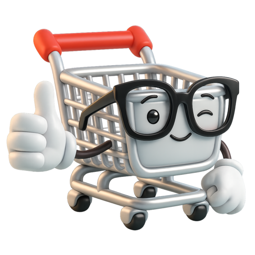

39Spec v6 — cerrado, con el tablero personal y el panel dentro
Sustituye al turno 34 y lo incluye. Es el delta de los turnos 35 a 38: un cambio de modelo, una regla nueva, dos números de panel y un turno que se queda sin objeto. Todo lo de v5 sigue vigente sin un cambio, incluida la única deuda que este documento no puede pagar solo.
Modelo — el único cambio de datos de todo el documento
−
List.board
El tablero deja de ser identidad compartida de la lista (24a).
+
UserListPref { userId, listId, board }
Por persona y lista, con valor asignado al entrar, rotando los seis para que dos listas tuyas no empiecen iguales. No viaja: es preferencia, no dato de la lista. Lo puede cambiar cualquier miembro para sí mismo (37b).
Regla 20 — y la 21 que no fue
20 · La identidad es compartida; la orientación es de cada uno
Emoji y nombre los ve toda la casa y no se tocan en local. El tablero, que solo sirve para que tú encuentres la lista, es tuyo. Ninguna de las dos cosas se explica en la interfaz: se distinguen por dónde están.
«El tablero puede salir de la lista como color, nunca como material» hacía falta para 38c. Con 38a aprobado el color no sale, la regla 8 cubre el caso sola y el sistema se queda en 20 reglas. Consta escrita por si el color tiene que salir algún día.
Componentes tocados
ListSettingsSheet.tsx— el bloque «Tablero» son seis muestras de 52 px y una previa, sin pie de texto (37a), y escribe en UserListPref. Deja de ser acción de propietario.
ListCard.tsx— columna del emoji de 26 a 36 px, glifo de 19 a 28, fila de 46/54 a 50/56. Ni color de tablero ni tarjeta: el panel sigue plano (38a, regla 8).
SettingsScreen.tsx— sin cambios sobre v5: «Aspecto» con su segmentado de 44 px y «Sistema» por defecto.
Estado del trabajo
Cerrado. Las 28 pantallas, los dos modos, 20 reglas, tokens y los 30 contratos. El turno 35 queda sin objeto —existía para colocar una frase que la regla 20 borró— y el 38 paga las dos deudas que 37b dejó apuntadas.
Fuera de alcance, por si vuelve. Se añaden dos a las tres de v5: el tablero compartido por lista (24a, revocado en 36) y el color del tablero fuera de la lista en sus dos formas, canto (38b) y ficha (38c). Las cinco tienen su argumento escrito.
Lo único que sigue abierto, igual que en v5. Nada se ha visto en un teléfono de verdad, y el canto al 4 % de la altura baja hay que mirarlo en un OLED y en un LCD malo antes de dar el oscuro por bueno. No es un cabo de diseño: es la última verificación, y no se puede hacer desde aquí.
Cuatro turnos para una tabla nueva, dos números y una regla — y una regla retirada, que cuenta igual. Lo que enseña este delta es cuánto sostiene la regla 8: en cuanto el tablero pasó a ser personal, la tentación evidente era sacarlo al panel para que la orientación empezara antes, y las dos formas de hacerlo estaban dibujadas y funcionaban. La regla las paró sin discusión, y el resultado es que entrar en una lista sigue significando algo. El único residuo de v6 es el que ya dijo 37b: «la verde» deja de ser un nombre de casa, y el emoji a 28 px es lo que se pone en su lugar. Si en pruebas resulta que no basta, lo siguiente no es devolver el color al panel —eso es volver al turno 38— sino dejar que la casa acuerde el emoji y no solo quien crea la lista, que es identidad compartida y por tanto legal.
Prueba: «empaqueta el entregable» · «el modo de lectura nocturna» · «el emoji lo acuerda la casa»
38La deuda de 37b: el panel, que es donde la regla 20 se paga
Al leer 37b aparece algo que no vimos al escribirlo: dice que «la tarjeta de cada lista se tiñe del tablero tuyo», y el panel aprobado en 16ano tiene tarjetas ni un solo color — son filas planas separadas por regla de 1 px, y la regla 8 deja el papel dentro de la lista a propósito. Así que 37b prometió algo que el panel no puede cumplir tal cual. Y en paralelo dejó apuntado subir el emoji, que tras la regla 20 pasó a ser el único asidero compartido. Son la misma pantalla y la misma decisión: 38a paga solo la deuda del emoji y no saca el color, 38b saca el tablero como canto, y 38c lo mete donde ya está el emoji — que es la que te recomiendo, porque hace visible la regla 20 en un solo objeto.
38aSolo el emoji, y el tablero no sale de la lista — aprobado
CarroQueSí
Tus listas3
🥑La semanaMarta y tú · 3 en el carro8
🌮Cena del sábado5
🧴CasaMarta, Luis y tú2
Nueva lista
16a con dos números cambiados: la columna del emoji pasa de 26 a 36 px y el glifo de 19 a 28, lo que sube la fila de 46/54 a 50/56. Cuesta 4 px por lista y con eso el emoji se puede señalar desde el otro lado de la cocina, que era literalmente lo que 37b pedía. Lo honesto de esta opción es lo que no hace: deja la regla 8 intacta y acepta que el tablero se quede dentro de la lista. El precio también es claro — la orientación personal solo empieza a funcionar cuando ya has entrado, y el panel es justo donde eliges.
38bEl tablero como canto, a la izquierda de la fila
CarroQueSí
Tus listas3
🥑La semanaMarta y tú · 3 en el carro8
🌮Cena del sábado5
🧴CasaMarta, Luis y tú2
Nueva lista
El tablero sale como canto de 6 px —el mismo gesto que la pestaña de una carpeta— y no como superficie: no hay kraft de fondo, no hay hoja encima, no hay sombra. Funciona a la primera y es lo más parecido a lo que decía 37b sin romper nada. Lo que no me gusta es que añade una columna para decir una sola cosa: el emoji ya está ahí al lado haciendo el mismo trabajo de identificar, y ahora hay dos marcas en 47 px compitiendo por la misma mirada. Con tres listas no molesta; con siete, el borde izquierdo del panel se convierte en un arcoíris que ya no orienta.
38cEl emoji sobre su tablero — una sola marca, en las dos luces
Claro
CarroQueSí
Tus listas3
🥑La semanaMarta y tú · 3 en el carro8
🌮Cena del sábado5
🧴CasaMarta, Luis y tú2
Nueva lista
Oscuro
CarroQueSí
Tus listas3
🥑La semanaMarta y tú · 3 en el carro8
🌮Cena del sábado5
🧴CasaMarta, Luis y tú2
Nueva lista
21 · El tablero puede salir de la lista como color, nunca como material — retirada al aprobar 38a
No hace falta: al quedarse con 38a, el tablero no sale de la lista y la regla 8 cubre el caso sola. Queda escrita por si algún día el color tiene que salir. La regla 8 sigue en pie y no se toca: kraft, hoja, velo y manuscrita se quedan dentro de una lista abierta. Lo que esta regla permite es lo que 37b necesitaba y no supo decir: el valor del tablero —un color de los seis— puede aparecer fuera como etiqueta, en una superficie de 40 px sin sombra, sin textura y sin nada encima. Cuando el tablero es material, estás dentro de la lista; cuando es solo color, estás eligiendo. El contraste lo lleva siempre el texto contra el fondo plano, nunca contra el tablero — así los seis colores son intercambiables sin recalcular nada.
Una sola marca por fila, y hace las dos cosas de la regla 20 a la vez: el emoji encima es lo compartido —lo que se dice en voz alta— y el color debajo es lo tuyo. Están en el mismo objeto porque en la cabeza de quien mira también son una sola cosa: «la verde del aguacate». La ficha de 40 px es hit-target por sí sola, así que la fila sube a 56/60 y el panel gana 10 px por lista frente a 16a — el coste más alto de las tres opciones y el único que compro, porque sustituye a las dos marcas de 38b por una. «Nueva lista» hereda la ficha en discontinuo, que es la que ya usa el sistema para un hueco reservado (5a). En oscuro el color no se aclara: son los mismos seis tableros de 37a con su valor nocturno, y el filo superior al 8 % es el mismo canto de la regla 18, aquí en su versión más pequeña. Lo que hay que vigilar: seis colores medios con un emoji encima aguantan bien a tres listas y se vuelven ruido a partir de ocho — si eso pasa en pruebas, la salida no es quitar el color sino bajar el emoji a 18 px y la ficha a 32, en ese orden.
Prueba: «38c, y cierra el spec como v6» · «38c sin ficha, solo el emoji a 28» · «lo mismo en la cabecera de la lista»
36a sin texto aclaratorio, como pediste — y tienes razón en que no era necesario: seis muestras bajo el rótulo «Tablero», dentro de los ajustes de esta lista, no admiten muchas otras lecturas. Lo que sí hay que escribir es la consecuencia, porque es más grande que el control: el tablero deja de ser identidad de la lista y pasa a ser orientación tuya. Eso deja el turno 35 sin objeto —existía para colocar una frase que ya no existe— y obliga a un delta de modelo. El bloque final en 37a, el delta en 37b.
Idéntico a 35a menos la frase, y con eso el bloque queda en lo que era: seis muestras y una previa. La previa se queda —no es texto, es la comprobación de que el material aguanta el cambio de luz— y sigue dibujándose con el canto del modo activo. Las dos columnas están aquí para el documento, no para la app: en el móvil solo se ve la del modo en que estés.
Sale del objeto compartido. Con él se cae la afirmación de 24a «la casa entera ve el mismo tablero» y el argumento de que el tablero se guarda junto al emoji y el nombre porque es identidad. Ya no lo es.
+
UserListPref { userId, listId, board }
Preferencia por persona y lista. Y un valor asignado, no vacío: al crear o entrar en una lista se te da un tablero automáticamente, rotando los seis para que dos de tus listas no empiecen iguales. Es la pieza que hace que 36a funcione sin pedir nada: si el tablero es tuyo y sirve para orientarte, nadie debería tener que elegirlo para que empiece a servir.
~
ListSettingsSheet.tsx · ListCard.tsx
El bloque de tablero pierde el pie de texto (37a) y escribe en UserListPref, no en List — así que deja de ser una acción de propietario y la puede hacer cualquier miembro. En el panel no se ve: resuelto en 38a, donde el tablero se queda dentro de la lista y lo que sube es el emoji.
20 · La identidad es compartida; la orientación es de cada uno
Lo que nombra una lista —emoji y nombre— lo ve toda la casa y no se toca en local. Lo que solo sirve para que tú la encuentres —el tablero— es tuyo y no viaja. Ninguna de las dos cosas necesita explicarse en la interfaz: se distinguen porque una está en la tarjeta de la lista y la otra en tus ajustes de esa lista.
Lo que cuesta, dicho una vez
«La verde» deja de existir como nombre de casa. A cambio, el emoji pasa a ser el único asidero visual compartido y sube de peso: en el panel es lo que hay que poder señalar desde el otro lado de la cocina. Si en algún momento se queda corto, la salida no es devolver el tablero a la lista —eso es volver aquí— sino dar más tamaño al emoji en la tarjeta. Queda apuntado y no lo hago ahora: es un cambio de panel y este turno es de tablero.
La regla 20 es más útil que el cambio que la provoca, porque separa dos cosas que estaban juntas por accidente: nombrar y encontrar. En 24a el tablero hacía las dos y por eso tenía que ser compartido; en cuanto se queda solo con encontrar, ser personal no es una concesión — es lo correcto. Y de paso resuelve algo que 24a tenía torcido y no vimos: elegir el tablero era una decisión de casa que cualquiera podía cambiarle a los demás, y eso en una app familiar es una fuente de roce pequeña y perfectamente evitable.
Prueba: «cierra el spec como v6» · «el emoji más grande en el panel» · «empaqueta el entregable»
36El tablero por persona — tres formas, con lo que cuesta cada una
Cambia la decisión de 24a, donde el tablero era de la lista y lo veía toda la casa. El argumento de entonces era uno y sigue en pie: si cada uno ve un tablero distinto, «la verde» deja de ser un nombre que se pueda decir en voz alta —y esa era la mitad del valor del tablero, la otra mitad es saber en qué lista estás—. Así que no lo discuto, lo pongo en la mesa: 36a te lo da entero y paga el precio, 36b lo convierte en preferencia tuya y pierde las dos mitades, y 36c te lo da sin pagar nada, que es la que te recomiendo.
Lo que pediste, literal: el tablero sale de la lista y pasa a la pareja persona × lista. Conserva la mitad útil —de un vistazo sabes en cuál estás— y pierde la otra: la misma lista es verde para ti y barro para tu pareja, así que «mira la verde» deja de significar nada y hay que decir «la de la semana». El rótulo cambia de «Tablero» a «Tu tablero», que es la única forma de que nadie crea que está decorando para la casa. Coste técnico: el tablero sale de List y entra en una tabla de preferencias por usuario y lista, con su sincronización.
El tablero baja a preferencia personal y se va a ajustes, al lado de «Aspecto». Es la más simple de construir y la única que no recomiendo en ninguna circunstancia: si todas tus listas tienen el mismo fondo, el fondo deja de ser información y pasa a ser decoración —las dos de abajo son la prueba: nada las distingue—. Pierde las dos mitades del valor de 24a a la vez y en cambio no gana nada que el modo claro/oscuro no diera ya. Si al final quieres esto, mi consejo es quitar los tableros del todo antes que dejarlos así.
Cambiado solo en tu móvil. La casa lo tiene en salvia.
Volver al de la casa
Semana
tú · niebla
Semana
la casa · salvia
La lista sigue teniendo su tablero —así que «la verde» sigue existiendo y sigue siendo lo que dice el resto de la casa— y encima cualquiera puede taparlo solo para sí. El anillo gris marca el de la casa, el azul el tuyo; la frase dice qué está pasando y el sello devuelve. Una sola pieza nueva y todo lo demás intacto. La regla que la sostiene: un objeto compartido tiene un valor de la casa, y una preferencia personal lo tapa sin borrarlo — y siempre hay camino de vuelta, porque un cambio personal sin retorno es una trampa. Coste técnico: el mismo de 36a, con un valor null que significa «lo que diga la lista».
Prueba: «36c» · «36a, asume el coste» · «quita los tableros»
Sustituido por 37a: el tablero pasó a ser de cada uno en el turno 37, así que la frase que este turno venía a colocar ya no dice nada verdadero. Se queda por el razonamiento de dónde va una aclaración, que sigue valiendo. — Al quitar la explicación del conmutador dije que iba junto al selector de tablero. Aquí está, y de paso se ve lo que la frase afirma: el mismo tablero elegido, en las dos luces. Sin esto, «Salvia» en un móvil en claro y «Salvia» en otro en oscuro parecen dos listas distintas, y es la clase de duda que nadie escribe en una reseña — simplemente deja de usar los tableros.
35aEl bloque de tablero en ListSettingsSheet, en las dos luces
Claro
Tablero
Lo ve toda la casa. Se adapta a la luz de cada móvil.
Semana
Oscuro · la misma lista, el mismo tablero
Tablero
Lo ve toda la casa. Se adapta a la luz de cada móvil.
Semana
Por qué así
Dos frases de siete palabras, no un párrafo. «Lo ve toda la casa» contesta ¿es mío o de todos?; «Se adapta a la luz de cada móvil» contesta ¿por qué a mi hermana le sale otro verde?. No hace falta nombrar el modo oscuro ni explicar la mecánica: quien tiene la duda tiene una de esas dos, y ninguna se pregunta con esas palabras.
Debajo de las muestras, no encima. Encima sería una advertencia sobre algo que aún no has hecho. Debajo es una respuesta a la elección que acabas de mirar — y ahí la lee quien la necesita y la salta quien no.
La vista previa cierra la frase. El trozo de tablero con su hoja encima ya estaba en 24a; lo que es nuevo es que se dibuja con el canto del modo activo, así que la previa de oscuro enseña de verdad lo que vas a tener. Es lo que convierte la frase en algo comprobable en vez de una promesa.
Puestas una al lado de la otra se ve que el tablero no es un color: es un material con dos iluminaciones, que es exactamente lo que dice la regla 18 y lo que hace que «la verde» siga siendo un nombre decible en las dos luces. También se ve por qué el conmutador de 34a no necesitaba miniaturas: aquí la previa tiene un trabajo —confirmar que la elección sobrevive al cambio de luz— y allí no tenía ninguno. La misma pieza gana o pierde su sitio según lo que tenga que demostrar.
Prueba: «empaqueta el entregable» · «revisa el oscuro en OLED»
Repasadas las 28 pantallas aprobadas contra 33a. Veintiuna se traducen solas —cambian de tokens y no de diseño— y no las redibujo: hacerlo sería llenar el documento de copias. Siete planteaban una pregunta de verdad y están resueltas una a una en 34b, con su veredicto en una línea. El conmutador que faltaba, en 34a. Y el entregable cerrado, spec v5, en 34c: sustituye al turno 31.
Tres opciones y no un interruptor, porque «como el sistema» es lo que quiere la mayoría y un interruptor de dos estados no lo puede decir; por eso viene seleccionada de fábrica. Fuera las miniaturas dibujadas y la frase explicativa que tenía debajo: nadie necesita una vista previa de un modo oscuro, y dibujar tablero y hoja aquí era enseñar el sistema en vez de dejar elegir. Un segmentado de tres palabras, el mismo componente que ya usa la app, y se acabó. Sigue en ajustes y no en la lista, al revés que el tablero, porque el tablero es identidad de la lista y el modo es condición de tu ojo: la casa entera ve el mismo tablero, cada uno con su luz. Si alguien se lía con eso, la explicación va junto al selector de tablero — donde surge la duda—, no aquí.
Sube del 45 % al 68 %, y la hoja que emerge no es papel: es un papel más nuevo —#2e313b, un peldaño por encima—. En claro el velo bastaba porque la hoja era blanca sobre gris; en oscuro, si la hoja no sube, el velo se la come. Regla 17 aplicada: el relieve lo hace el canto y aquí también el tono.
2 · La mascota

¡a por ello!Aún no tienes listas
Se queda igual y sin plato debajo. Es lo único luminoso de la pantalla y eso es correcto: los vacíos son las dos únicas pantallas donde la app quiere que mires un sitio concreto. Ponerle un fondo claro para «integrarla» la convertiría en una pegatina. Lo que sí cambia: el texto va sobre cartón, así que usa --board-ink, no tinta de hoja.
3 · Los tres colores que significan algo
Comprado✓
Sin conexión · se guarda al volver
Leche enterajueves
Los tres del sistema base valen tal cual sobre #252731: verde #7bc68b 7,3:1, tomate #e68a82 5,9:1, miel #e6c56a 8,9:1. Lo que no vale es ponerlos sobre cartón: los tres pierden contra los tableros saturados. Ningún color semántico sale de la hoja — que ya era verdad en claro, pero por costumbre y no por regla.
4 · El escáner, que ya era oscuro
Apunta al código de barras
Es la única superficie que no es papel —es una cámara— y por eso es la única que no cambia entre modos: siempre negra. En claro era una excepción incómoda; en oscuro deja de serlo, y eso confirma que estaba bien. Lo único que se ajusta es el marco que la rodea, que sí es hoja.
5 · El selector de tablero, eligiendo a oscuras
Tablero
Muestra los tonos del modo en el que estás, no los del claro. Elegir «salvia» viendo un verde de día y encontrarse otro de noche sería una mentira pequeña pero de las que se recuerdan. El anillo de selección pasa a doble —tinta y un hueco de hoja— porque sobre seis fondos oscuros un borde simple se pierde en tres de ellos.
6 · Lo discontinuo, que casi desaparece
Detergente8,15Yogur natural1,902 importes por confirmar
La regla 16 se sostiene, pero el discontinuo sube un peldaño de tinta: de --ink-3 a #6e7280. Un discontinuo tiene la mitad de píxeles que un macizo, así que a igualdad de color se lee la mitad — en claro sobraba margen, aquí no. Todo trazo discontinuo del oscuro se dibuja un paso más claro que su equivalente macizo.
7 · El histórico de precios
Precio · 6 meses
feb€ 1,90
Las barras dejan de ser --paper-2 y pasan a #3c4050. En claro la serie histórica era papel un tono más hundido —hundir funciona sobre blanco—; en oscuro hundir es desaparecer, así que la serie emerge: un paso por encima de la hoja en vez de uno por debajo. Es el mismo movimiento que el velo de la pieza 1 y por la misma razón, y merece decirse una vez para todo el sistema: en oscuro, lo secundario no se hunde — se levanta menos. La única barra con tinta sigue siendo la última, que es el dato que se ha venido a ver.
Las siete tienen un patrón común y vale la pena nombrarlo, porque es lo que va a hacer falta cuando llegue una pantalla nueva: en claro la jerarquía se construye quitando —hundiendo, apagando, velando—, y en oscuro hay que construirla poniendo. No queda sitio por debajo. Todo lo que en claro era «un tono menos» pasa a ser «un tono más, pero menos que el principal»: el velo, las barras del histórico, la hoja modal. Y su recíproco, que es la pieza 6: los trazos finos y discontinuos, que en claro sobrevivían al mínimo, aquí necesitan un paso de tinta extra. Ninguna de las siete cambia una decisión de diseño — las siete cambian de qué lado se dibuja la misma decisión.
Sustituye al turno 31 y lo incluye. Esto es solo el delta del oscuro: los turnos 32-34. Todo lo de v4 sigue vigente sin un cambio.
Tokens nuevos — solo tienen valor en oscuro
+
--edge-lit · --edge-cast
El canto, tres valores cada uno por altura: 15/8/4 % blanco arriba y 55/45/30 % negro abajo. En claro los dos son transparent, así que la hoja no cambia ni una línea de CSS entre modos: lleva siempre borde superior e inferior y sombra, y cada modo apaga lo que no usa.
+
--void
#08080b, el agujero del troquel. La única excepción a la gramática que introduce el oscuro: los puntos dejan de ser del color del tablero. Las muescas siguen siéndolo — en el borde el corte se lee sin ayuda.
+
--paper-lift · --series
#2e313b y #3c4050: la hoja modal y las series secundarias. En claro son --paper-0 y --paper-2 —por debajo—; en oscuro, por encima. Son la forma token de la regla 19.
~
--board × 6 · --board-ink · --veil · --dash
Tableros oscuros en 33c —misma luminosidad que 32a, doble croma—. --board-ink pasa a tinta clara y se tiñe del tablero: #e9e3d6 en los cálidos, #dcdee4 en los fríos. Velo del 45 % al 68 %. Veladura de compra al 20 %, no 22. Discontinuos un paso más claros que su macizo (#6e7280).
Reglas 17 a 19
17 · El orden no cambia con la luz; cambia cómo se dibuja
La hoja está siempre por encima del tablero. En claro el relieve lo hace la sombra; en oscuro, el canto. Ninguna sombra oscura sobre fondo oscuro se da por buena sin mirarla: si no se ve, no está.
18 · Un tono que pierde luz gana color
Los colores de material conservan el matiz y suben la saturación al bajar de banda, en vez de volverse grises teñidos. «La verde» tiene que seguir siendo un nombre decible de noche.
19 · En oscuro lo secundario no se hunde: se levanta menos
No queda sitio por debajo de la hoja. Todo lo que en claro era «un tono menos» —velo, series del histórico, superficie modal— pasa a ser un tono más, siempre por debajo del principal. Su recíproco: los trazos finos y discontinuos suben un paso de tinta, porque tienen la mitad de píxeles y a igual color se leen la mitad.
Componentes tocados
Sheet.tsx— superficie a --paper-lift y velo a --veil. Sigue sin backdrop-filter.
ListSettingsSheet.tsx— el selector de tablero pinta los tonos del modo activo; anillo de selección doble; vista previa con el canto del modo, sin pie de texto (37a). El tablero se guarda en UserListPref, no en List (37b).
SettingsScreen.tsx— fila «Aspecto» nueva, segmentado de tres (34a), con «Sistema» por defecto. Persiste en el dispositivo, no en la cuenta.
PriceHistory.tsx— serie a --series; la última barra sigue en tinta.
BarcodeScanSheet.tsx— sin cambios: la cámara es negra en los dos modos, y es la única superficie que no es papel.
Estado del trabajo
Cerrado. Las 28 pantallas, los dos modos, 19 reglas, tokens y contratos. No queda ningún cabo abierto de los que abrimos en el turno 15.
Fuera de alcance, por si vuelve. Tres cosas que se decidieron no hacer y conviene que consten: modo pasillo (2g), recuperación de envíos sobre lista borrada (19c) y la píldora flotante de cierre en sus tres formas (31a). Si alguien las pide otra vez, el argumento está escrito.
Lo que este documento no puede dar. Ninguna de las 28 se ha visto en un teléfono de verdad, y el oscuro es justo donde eso importa: el canto de 33b depende del panel. Antes de dar el oscuro por bueno, hay que mirarlo en un OLED y en un LCD malo — el filo al 4 % de la altura baja es el primero que se cae.
Tres reglas nuevas y cinco tokens para un modo entero es poco, y eso es la señal de que el sistema estaba bien montado: el oscuro no ha obligado a rediseñar nada, solo a dibujar por el otro lado lo ya decidido. La única excepción de verdad en toda la gramática es --void. Y hay un residuo honesto que no arreglo porque no tiene arreglo dentro de esta decisión: este oscuro es más luminoso que la media, porque la hoja ocupa la pantalla y la hoja tiene que ser lo más claro. Es la consecuencia directa de mantener el orden papel-sobre-cartón, y quien use la app en la cama lo va a notar. Si algún día molesta lo suficiente, la salida no es bajar la hoja —eso es 32b y ya se descartó— sino un tercer modo de lectura nocturna que baje el conjunto sin tocar el orden.
Prueba: «empaqueta el entregable» · «revisa el oscuro en OLED» · «el modo de lectura nocturna»
Acepto 32a y retiro mi recomendación: el papel sigue siendo lo más claro, y el orden de 24a no se toca. Pero venía con dos deudas y ninguna se paga sola, así que las cobro aquí antes de propagar. Una: sin sombra visible la mesa deja de sentirse mesa — se resuelve con canto, no con más sombra (33b). Dos: los seis tableros se apilaban en once puntos de luminosidad y dejaban de identificar la lista — se resuelve cambiando luz por color (33c). La pantalla canónica corregida, en 33a: sustituye a 32a.
El kraft gana color al perder luz. De #1f180f —que era barro apagado— a #2a1d0a: misma luminosidad, el doble de croma. Ahora se lee kraft y no «marrón oscuro genérico». Los seis, en 33c.
Canto completo, arriba y abajo.32a solo tenía filo superior. Añadida la línea negra inferior de 1 px: es lo que convierte un recorte en un objeto con grosor. El detalle, en 33b.
El glifo del carro vuelve al papel. Era #161824 inventado; ahora es --paper-0 = #252731, la propia hoja, como manda el disco macizo en claro.
Tinta de cartón más cálida.#e9e3d6 en vez de #d9dbe1: sobre un kraft ahora saturado, una tinta fría se veía azulada — el cartón tiñe lo que se escribe encima.
Tenías razón en lo que importaba: el orden no se negocia. Papel encima de cartón es de donde sale la mesa, el troquel, las tres alturas y la veladura; invertirlo por comodidad de implementación habría sido pagar el sistema entero para ahorrar dos tokens. Lo que sí era verdad de mi objeción es que 32a estaba a medias: un fondo negro no es un tablero y un filo solo no es un canto. Con las dos deudas pagadas, la única excepción que el oscuro introduce en toda la gramática es --void en el troquel, y es una excepción que se explica en una línea. La pantalla sigue siendo más luminosa que un oscuro convencional, y eso es una consecuencia de la decisión, no un defecto de ejecución: esta app es papel, y el papel se ve.
33bEl canto — las tres alturas sin una sola sombra que se vea
Control · solo sombra, como en claro
Recortada sobre el fondo
Los mismos valores del claro. La sombra existe en el CSS y no existe en el ojo: negro al 16 % sobre un tablero que ya es casi negro no imprime nada. No hay grosor.
Alta · la lista, la hoja de encima
Por comprar
Filo superior blanco al 15 % + canto inferior negro al 55 % + una franja negra de 3 px pegada debajo. Los dos filos son la arista del papel; la franja es el hueco por donde entra la mesa.
Media · las hojas de compra
Lidl · lunes 20
Filo al 8 %, canto al 45 %, franja de 1 px. La jerarquía se expresa en el filo, no en el desenfoque: menos filo es menos luz recibida, y menos luz recibida es estar más abajo. Es la misma información que daba la sombra, dicha por el otro lado del papel.
Baja · pegada a la mesa
Una hoja sin levantar
Filo al 4 %, sin franja. No la usa ninguna pantalla hoy; queda declarada porque es el suelo de la escala y lo que hace que las otras dos se lean como levantadas.
El canto no es un sustituto de la sombra: es la otra mitad de la misma cosa, la que en claro no hacía falta dibujar porque el papel ya era más claro que todo. De noche el papel sigue siendo lo más claro de la escena, pero por poco —nueve puntos de luminosidad sobre el tablero—, y con nueve puntos el borde no se sostiene solo. Así que se dibuja: una arista iluminada arriba, una sombra propia abajo. Sigue habiendo tres alturas, siguen significando lo mismo que en 31a, y ninguna necesita un desenfoque que no se puede ver.
33cLos seis tableros — luz por color, y las dos reglas
Oscuro definitivo — misma luminosidad que 32a, el doble de croma
Los seis se mantienen en la banda 28-32 de luminosidad —por debajo de la hoja, que está en 39— y recuperan la identidad por matiz saturado. A oscuras el ojo distingue color mucho antes que luminosidad, así que es la palanca correcta: no hace falta subirlos para que «la verde» siga siendo la verde.
2a1d0a23201412240f0f1e333314091b1c24
KraftLinoSalviaNieblaBarroPizarra
Semana
Salvia
Droguería
Niebla
Cena
Barro
17 · El orden no cambia con la luz; cambia cómo se dibuja
La hoja está siempre por encima del tablero, en claro y en oscuro: es la premisa de la que salen la mesa, el troquel y las tres alturas, y no se invierte por conveniencia. Lo que cambia es el recurso: en claro el relieve lo hace la sombra; en oscuro lo hace el canto —filo iluminado arriba, sombra propia abajo—. Corolario práctico: ninguna sombra oscura sobre superficie oscura se da por buena sin mirarla; si no se ve, no está.
18 · Un tono que pierde luz gana color
Cuando un color de material baja a la banda oscura, conserva el matiz y sube la saturación en vez de quedarse en un gris teñido. Vale para los seis tableros y para cualquier superficie de material que venga después. La razón es de percepción, no de gusto: a esa luminosidad la diferencia entre dos grises teñidos es invisible y la diferencia entre dos matices saturados no. Y hay una consecuencia de contenido: «la verde» tiene que seguir siendo un nombre decible de noche (24a), o el tablero deja de servir para lo que se puso.
+
--void · --edge-lit · --edge-cast
Tres tokens nuevos, solo en oscuro. --void#08080b para el agujero del troquel —las muescas siguen siendo del tablero, porque en el borde el corte sí se lee—. --edge-lit y --edge-cast con tres valores cada uno, uno por altura: 15/8/4 % y 55/45/30 %. En claro los tres se declaran a transparent y la hoja no cambia ni una línea de CSS entre modos.
Las tres muestras del medio son la prueba que 32a no pasaba: tres listas distintas, tres tableros, distinguibles a un metro sin leer el título. Con esto el oscuro queda cerrado como modelo. Lo que falta es mecánico —propagar a las ~28 pantallas aprobadas y añadir el conmutador de 23a, que por cierto no debería tener tres opciones sino dos y «como el sistema»— y el spec v5, que ya solo suma los tres tokens de arriba y las reglas 17 y 18.
Prueba: «propaga a todas las pantallas» · «cierra el spec como v5» · «el conmutador en ajustes»
32El oscuro — y la pregunta que no se traduce sola
La pasada que quedaba de 31c. Los tonos y la veladura son aritmética, pero hay una decisión de fondo que no lo es: en claro la hoja es más clara que el tablero, y en oscuro las dos cosas no pueden ser verdad a la vez. Si el papel sigue siendo lo más claro (32a), la pantalla se queda encendida y las sombras dejan de verse; si el papel se va al grafito (32b), el tablero pasa a ser lo iluminado y se invierte el orden de 24a, pero las sombras y el troquel siguen funcionando tal cual. Las dos con el mismo contenido de 30a recortado, para poder compararlas. Tokens en 32c.
Guardar un ticketDe una compra que no apuntaste aquí
Qué cambia respecto al claro
El tablero baja, no la hoja. El kraft se va a #1f180f y la hoja se queda en #252731: se conserva el orden de 24a —papel encima de cartón— que es de donde sale todo lo demás.
La hoja se levanta con canto, no con sombra. Una sombra negra sobre un tablero casi negro no existe. La sustituye un filo claro arriba al 13 % y un canto negro abajo; el rango de las tres alturas se mantiene variando el filo, no el desenfoque.
El troquel deja de ser del tablero. Con tablero y hoja tan cerca, unos puntos color kraft desaparecen. Pasan a vacío#0a0a0d —el agujero de noche es sombra, no cartón—; las muescas sí siguen siendo del tablero, porque son borde y ahí el corte se lee.
La veladura baja al 20 %. Sobre grafito, el 22 % de 31a apagaba las filas por debajo de 4,5:1. Al 20 % la compra sigue leyéndose un punto más muerta que la lista, que es lo único que tiene que decir.
Es la traducción honesta: el papel es lo que refleja, y en una habitación a oscuras el cartón se va a negro antes que la hoja. Todo el vocabulario sobrevive sin excepciones nuevas salvo la del troquel. El precio es real y hay que decirlo: la hoja ocupa casi toda la pantalla, así que esto no es un oscuro apagado —es una app clara con el papel bajado dos tercios—. A las tres de la mañana en la cama, brilla. Y la segunda pérdida es más sutil: la mesa deja de sentirse como una mesa, porque sin sombra visible los papeles ya no están encima de nada, están recortados sobre un fondo.
Guardar un ticketDe una compra que no apuntaste aquí
Qué cambia respecto al claro
Se invierte el orden, y solo eso. La hoja baja a #14151a y el kraft se queda en #3b2f22. El tablero pasa a ser lo más claro de la pantalla: ya no es la mesa a oscuras, es la mesa bajo la lámpara y el papel en su propia sombra.
Las sombras siguen siendo sombras. Al haber tablero más claro debajo, la sombra vuelve a verse y las tres alturas de 31a funcionan con los mismos valores subiendo solo la opacidad. La mesa se sigue sintiendo mesa.
El troquel no necesita excepción. Los puntos siguen siendo del color del tablero, como dice 31a, y ahora además se ven más que en claro: son kraft sobre grafito. Igual las muescas.
La veladura se queda en el 22 %. Como estaba previsto, y con el filo blanco de arriba bajado del 58 % al 17 % para que el papel apagado no brille más que el limpio.
Contradice 24a en una línea —el tablero ya no queda por debajo de la hoja en luminosidad— y a cambio no rompe nada más: sombra, troquel, veladura y los seis tonos siguen valiendo con los mismos valores. Y es un oscuro de verdad, apagado, porque la superficie grande de la pantalla es la hoja y la hoja es lo negro. El argumento a favor no es solo técnico: un tablero de cartón que quede casi negro deja de ser cartón —pierde el material, que es lo único que ese elemento aporta—, mientras que un papel en penumbra sigue siendo papel. La luz cambia; el material no. Si te convence, la regla que hay que escribir es corta: en claro manda la reflectancia, en oscuro manda el material — el tablero conserva su tono y la hoja cede.
Cada tono conserva su matiz y pierde luminosidad y saturación: son los mismos seis materiales sin luz. Se distinguen, pero poco — a esta altura la diferencia entre salvia y niebla es de dos puntos.
Bajan un tercio y no más, para seguir siendo material reconocible sobre hoja de grafito. Aquí «la verde» y «la de barro» siguen siendo nombres decibles, que era el argumento de 24a para tener seis.
3b2f223d392f2c3a2a2a35413f282033333a
+
--void
Solo existe en oscuro y solo si vale 32a: el agujero del troquel cuando el tablero está demasiado cerca de la hoja para leerse como corte. #0a0a0d. En claro y en 32b no se declara.
~
--board-ink
Sigue calculándose por tono, pero cambia de lado: en oscuro es tinta clara sobre tablero oscuro. Un valor por familia, no seis: #d9dbe1 sobre los fríos, #e4ded3 sobre los cálidos. Los cantos de cartón —las dos reglas discontinuas del pie— pasan a ser esa misma tinta al 32-34 %.
~
--sheet-cast-*
En 32b, los mismos desplazamientos con la opacidad subida (16 %→50 %, 30 %→70 %). En 32a dejan de ser sombra y pasan a ser canto: filo superior blanco y línea negra inferior, y la jerarquía de tres alturas se expresa en el filo. Es el cambio más caro de los dos caminos.
~
--tinta-0 · el verde de comprado
Los dos ya estaban resueltos en el sistema base —#91a8ff y #7bc68b— y no cambian en ninguno de los dos caminos. El disco macizo del carro invierte su tinta: glifo en --paper-0, que en oscuro es el grafito.
Los seis tonos son la prueba que decide. En 32a los tableros se apilan en once puntos de luminosidad y la elección de la lista deja de servir para lo que servía —saber en cuál estás de un vistazo—; en 32b se siguen distinguiendo a un metro. Si me lo dejas a mí, 32b: la reflectancia es una razón bonita, pero el tablero es el único elemento del sistema cuyo trabajo es ser un material, y en 32a deja de hacerlo.
Prueba: «32b, propaga al resto» · «32a pero sube el papel» · «cómo se ve el conmutador en ajustes»
31Spec v4 — el entregable, con el troquel y el ticket con huecos dentro
Sustituye al turno 15, que sigue siendo válido en todo lo que no aparece aquí: esto son los deltas de los turnos 16 a 30. Antes, la propagación que pedías: revisadas todas las pantallas aprobadas, la única que contradecía al troquel era 25a —ya marcada como sustituida—; 24a, 26a y 21b dibujan la lista sin carro, así que siguen siendo correctas tal cual. La forma canónica de la pantalla es 30a.
El tablero deja de ser un literal y pasa a variable por lista (24a: kraft, lino, salvia, niebla, barro, pizarra). --board-ink es la tinta que se escribe encima —rótulos de «Compras anteriores» y «Guardar un ticket»— y se calcula por tono, no se elige: cada pareja tiene que dar 4,5:1.
+
.perf — el troquel
Banda de 12 px a sangre completa: puntos de --board de 1,7 px de radio cada 9 px, y dos muescas de 12 px —semicírculos de --board desbordando ±6 px—. Las muescas no son adorno: sin ellas la línea de puntos se lee como una regla más. El troquel sustituye a la regla discontinua de sección; no se suman.
+
.stamp — el sello impreso
Alto 26, contorno de 1,5 px en --tinta-0, radio 999, relleno ninguno, sombra ninguna, letra 11 px / .09em en versalitas. Excepción declarada al mínimo de 15 px: el sello es una marca, no el objetivo —el objetivo es la fila de 48 px que lo contiene—. Un sello con relleno macizo vuelve a ser botón y está proscrito sobre papel.
+
.receipt-thumb — dos estados
24 × 30, radio 3, icono receipt de 13. Maciza —borde 1 px --border, fondo --paper-1, sombra corta— cuando hay papel: abre el ticket. Discontinua —1,5 px --ink-3, sin fondo— cuando no: abre el escáner. Es la puerta que 25b pediía en la cabecera.
−
CartPill · el control flotante de cierre
Fuera en todas sus formas: píldora de 5b, rectángulo de dos segmentos de 25a, barra de cartón de 27d. Nada flota sobre el tablero. Las dos vías —ticket o a mano— se preguntan dentro de la hoja de cierre, donde caben explicadas.
~
--veil · --sheet-cast-*
Sin cambio de valor, sí de alcance: la veladura del 4 % y la sombra corta las llevan todas las hojas de compra, incluida la que está sin cerrar. La lista es la única sin velo y con la sombra alta: es la hoja de encima de la mesa.
El grupo «En el carro» deja de ir bajo regla discontinua y pasa a ir bajo el troquel. Su rúbrica cambia de manuscrita a impresa —versalitas, «En el carro · n»— y lleva el .stamp a la derecha; la fila entera, 48 px, es el objetivo. Con el carro vacío no hay troquel, ni rúbrica impresa, ni sello: vuelve la rúbrica a mano y el aviso «Nada todavía» (28c, variante 5).
Purchase · el modelo, con un estado nuevo
Una compra pasa a tener store?, amounts? y closedAt? opcionales, y date obligatorio. Al cambiar el día —medianoche local de quien marcó— el grupo del carro se arranca solo y nace una compra sin cerrar: qué y cuándo, nada más (29a). No es un aviso ni una tarea pendiente. Una compra sin cerrar no entra en el histórico de precios: un precio sin tienda no compara.
PurchaseSheet.tsx · la hoja de compra, un solo componente para los tres estados
Cabecera de una sola línea: miniatura, «tienda · fecha» —o «Sin tienda · fecha»— y, a la derecha, el total si está cerrada o el sello si no. Filas en mono con su disco de volver a comprar; la columna de importes se deja vacía cuando no hay precio —sin raya, sin guión: una raya la convierte en formulario—. Sin rótulo de estado en ningún caso.
CloseTripSheet.tsx · dos entradas, un solo destino
Se abre desde el sello del carro o desde el de una compra sin cerrar. La fecha se hereda del día en que se marcó, nunca es hoy por defecto en una compra vieja —si no, el histórico se ensucia—. La tienda vacía se pide con el tratamiento de «Ponerle nombre» de 26b. Las dos vías van aquí, con una línea que dice qué hace cada una, y cerrar sin importes es legítimo, con su consecuencia dicha sin dramatizar.
ListActionSheet.tsx · y el pie de cartón
Escanear sale del menú de la lista: sus dos puertas son la miniatura discontinua de una compra y «Guardar un ticket», esta última rotulada sobre el cartón, sin superficie propia, al final de la zona de compras (26a). El menú conserva tablero, compartir, renombrar y eliminar.
La mano es intención —lo que tú apuntas: la lista, sus encabezados de tienda—. El mono en caja alta es registro —lo que ya ocurrió: toda hoja de compra, tenga papel o no—. Y la imprenta es lo que trae el bloc: rúbrica del carro, sello y troquel. Ningún rótulo dice de qué tipo es una hoja; lo dicen la letra, el papel y lo que falta.
16 · Discontinuo es rellenable, macizo ya existe
Una misma gramática en toda la app: círculo discontinuo = sugerencia sin escribir (20b), subrayado discontinuo = falta confirmar (13a), cuadro discontinuo = aún no hay ticket (26a, 30a). Lo macizo se abre; lo discontinuo se rellena. Un hueco sin acción no se dibuja: se deja en blanco, como la columna de importes de una compra sin cerrar.
Lo que queda — y lo que se cierra aquí
Modo oscuro. La pasada completa. Tres piezas no se traducen solas: los seis tonos de tablero, la veladura —que en oscuro sube al 22 % y va en multiply sobre un papel que ya es grafito— y el troquel, cuyos puntos son del color del tablero y no de la hoja.
Un día con dos tiendas — cerrado, se resuelve solo. Al cerrar con ticket se emparejan las líneas de ese papel y lo que sobra hereda una segunda hoja del mismo día. No hace falta interfaz: es el mismo mecanismo funcionando dos veces.
Reintento imposible (19c) — descartado. Si la lista se borró, el envío pendiente se cae en silencio. Son productos de supermercado: el coste de perderlos es escribirlos otra vez, y no justifica una pantalla de recuperación.
Prueba: «ahora sí, el modo oscuro» · «repasa la app entera» · «empaqueta el entregable»
Una sola pantalla con las cuatro hojas que puede tener una lista viva, en el orden en que caen: la lista con lo pendiente y el carro troquelado (28a), la compra sin cerrar de ayer (29a), la cerrada a mano y la cerrada con ticket, y al pie las dos puertas escritas en el cartón (26a). La prueba de fuego del sistema: cuatro papeles distintos apilados y ninguno necesita rótulo que diga lo que es.
Guardar un ticketDe una compra que no apuntaste aquí
Cómo se distinguen, de arriba abajo
Lista. Papel blanco, sin veladura, escrita a mano — y la sombra más alta de la mesa: es la hoja de encima. Troquel y sello solo si hay carro.
Sin cerrar. Ticket: mono, papel apagado. Sin tienda, sin importes, y sello donde iría el total.
Cerrada a mano. Igual, pero con tienda y total. Miniatura en discontinuo: no hay papel, se puede añadir.
Cerrada con ticket. Miniatura maciza —el papel existe— y líneas que pueden ser muchas.
Cuatro hojas y ni un rótulo que diga de qué tipo es cada una: lo dicen la letra, el papel y lo que falta. La lista está escrita a mano en papel limpio; todo lo que ya es compra pasa a mono sobre papel un punto más apagado, porque es registro y no intención. Dentro del registro, la única diferencia es qué falta: sin tienda ni cifra y con sello, está sin cerrar; con tienda y cifra, cerrada. Y la miniatura de la cabecera contesta la otra pregunta —¿hay papel?— con la misma gramática de discontinuo que usamos en toda la app para «esto aún no existe»: discontinua se puede rellenar, maciza ya está. La miniatura también es la puerta de 25b: en discontinuo lleva a escanear, maciza lleva a ver el papel. El orden es cronológico inverso y no hace falta explicarlo: cada hoja trae su día. Y el pie sigue siendo cartón —dos puertas escritas sobre el tablero, sin superficie propia—, que es lo que impide que la pila parezca una bandeja de entrada.
Prueba: «ahora sí, el modo oscuro» · «cierra el spec como v4» · «el día con dos tiendas»
29El carro que se queda a dormir se convierte en ticket con huecos
Mejor que preguntar: el carro no caduca, madura. Al cambiar el día, lo que quedaba marcado se arranca solo por el troquel de 28a y cae en la zona de compras como un ticket más —mismo estilo que las compras guardadas de 26a, con lo único que sabemos de verdad: qué y cuándo—, sin tienda, con los importes en blanco y con el sello de cerrar donde las demás llevan el total. La lista queda limpia y nada se decide por ti. En 29a; el cierre de un proto-ticket, en 29b.
Es una compra de verdad —esos productos están comprados, los marcaste tú— a la que le faltan datos. No es un recordatorio ni un aviso: no hay «esto lleva dos días» en ningún sitio, porque la fecha ya lo dice. La lista de arriba queda limpia y el troquel desaparece con ella: el corte ya ocurrió.
Tu idea es mejor que la mía por una razón de fondo: no pregunta nada. El estado ambiguo se convierte en un objeto con nombre, fecha y sitio propio, y a partir de ahí se comporta como cualquier otra compra. Tres consecuencias que quiero señalar. La primera es tipográfica, y aquí te doy la razón: en estilo ticket —mono, en el gris de las compras guardadas de 26a— la hoja se lee como lo que es, una compra, y no como una lista pendiente que se quedó rara. Lo que iba a defender —manuscrita, porque la escribiste tú— hubiera dicho su origen a costa de su naturaleza, y su origen ya lo dicen los huecos. La segunda: el sello ocupa el sitio del total, en la cabecera, donde las demás compras llevan su importe —así la pila entera se lee de un vistazo: las cerradas tienen cifra, esta tiene sello—, y «Sin tienda» ocupa el sitio del nombre del comercio, en una sola línea con la fecha, exactamente como «Mercadona · 22 jul». La columna de importes se deja en blanco, sin raya en discontinuo: el hueco se ve solo, y una raya lo convertiría en un formulario. Las filas conservan su disco de volver a comprar, como cualquier compra guardada. La tercera es de precios: un proto-ticket no entra en el histórico hasta que se cierra —sabemos qué y cuándo, pero un precio sin tienda no sirve para comparar—. Y queda un cabo: un día con dos tiendas. La hoja no lo distingue, y al cerrar con ticket solo se emparejarán las líneas de ese papel; lo demás se queda sin cerrar y hereda una segunda hoja del mismo día. Puede valer, pero conviene decidirlo a propósito.
TicketLee tienda y precios del papel A manoUno a uno, o ninguno
Puedes cerrarla sin importes: quedará como compra del martes, y sus precios no entrarán en el histórico.
Es la hoja de cierre de siempre con dos diferencias: la fecha viene heredada del día en que marcaste —no de hoy, que es lo que ensuciaría el histórico— y la tienda está vacía y se pide, en discontinuo, con el mismo tratamiento que «Ponerle nombre» en 26b. Las dos vías de 25a aparecen aquí, no en la línea del talón, y ahora pueden explicarse: escanear el papel resuelve tienda y precios de golpe; a mano acepta que dejes importes en blanco. La última línea es la que evita el bloqueo: cerrar sin importes es legítimo —la compra existió— y solo tiene una consecuencia, que se dice sin dramatizar.
Prueba: «el día con dos tiendas» · «aprobado, ahora el modo oscuro» · «cierra el spec como v4»
28El troquel donde de verdad va: entre lo pendiente y el carro
Tu idea resuelve 27c y además lo mejora, porque el troquel deja de ser decoración y pasa a ser verdad: cerrar la compra arranca la mitad de abajo de la hoja —lo del carro se va y se convierte en ticket— y lo pendiente se queda arriba, intacto. La línea de puntos ya no es un adorno al pie: es por dónde se rompe la lista. Y con el corte ahí, la rúbrica «En el carro» recupera el cierre en su misma línea, como en 5b. En 28a, con el cierre en sello impreso; las cinco variantes de esa línea, en 28c.
El troquel sube al límite entre las dos secciones y sustituye a la regla discontinua que ya había ahí —no se añade material, se cambia uno por otro—. La rúbrica del carro pasa de escrita a impresa, porque a partir del corte la hoja es talón, y con ella recupera el cierre en la misma línea de 5b, ahora como sello impreso: filete de tinta, sin relleno y sin sombra. Vuelve el radio 999 de 25a, pero no vuelve la píldora: aquella era una superficie flotando sobre el tablero y esta es un contorno impreso dentro del talón —no tiene fondo, no tiene elevación y no se puede levantar del papel—. Los nombres siguen a mano —los escribiste tú, también en el talón—.
Tu propuesta arregla lo único que no me cuadraba y de paso le da sentido literal al gesto: lo que se arranca es exactamente lo que se lleva. La posición también se comporta bien sola: mientras compras, lo pendiente encoge y el carro crece, así que el corte sube por la hoja al ritmo de la compra y se queda siempre cerca de donde estás mirando —al principio, con el carro vacío, ni existe—. La regla de «solo tinta» sigue en pie porque el corte no es tinta: es el papel. Y hay un efecto que no buscábamos: el troquel explica los dos estados mejor que cualquier rótulo —arriba lo que sigue siendo lista, abajo lo que ya es ticket—. Y nada de agarrar la rúbrica al borde: que se vaya arriba es correcto. El corte sube porque la compra avanza; si hay que subir a buscarlo, es porque ya sabes que está ahí. Un pliegue pegado al borde sería fisicalidad fingida, que es peor que no tenerla.
El sello impreso es la forma de darle atractivo sin salirse de la imprenta: un filete de tinta no es una superficie de interfaz, es el sello que lleva impresa la casilla de cualquier cupón. Pequeño a propósito —26 px de alto, 11 px de letra—, porque no compite con nada: es lo único acentuado del talón. El toque no es el sello: es la fila entera, 48 px de borde a borde, así que el mínimo de 44 px se cumple y la línea sigue teniendo un solo destino. El mínimo tipográfico de 15 px se exceptuá a propósito: 11 px en versalitas espaciadas es tamaño de sello de imprenta, y aquí el texto no es el objetivo —es la marca que dice dónde mirar dentro de una fila que se toca entera—. Si prefieres no hacer la excepción, sube a 12,5 px y el sello crece a 30 px. La 3 pesa más pero rompe la norma —un relleno macizo es un botón, y volvemos a la píldora de 25a con otra forma—; la dejo para que se vea la diferencia. La 4 conserva las dos vías de 25a pero mete tres objetivos táctiles en una línea, y con una mano en el pasillo eso es justo lo que la regla de dos objetivos por fila prohíbe: la elección entre ticket y a mano es lo primero que pregunta la hoja que se abre. La 5 es el estado sin carro: sin corte, sin cierre, rúbrica a mano —el talón solo existe cuando hay algo que arrancar—.
Prueba: «aprobado, llévalo a las demás pantallas» · «ahora sí, el modo oscuro» · «cierra el spec como v4»
Tienes razón: el control de 25a flota sobre el tablero sin ser ni papel ni cartón, y en una vista que va de papeles sobre una mesa eso se nota. Las cuatro salidas, de la más conservadora a la más física. 27a lo escribe como última línea de la hoja; 27b lo imprime como pie de la hoja; 27c lo convierte en talón troquelado; 27d lo baja al cartón como pestaña. La norma que hay que respetar en las tres primeras: sobre la hoja solo hay tinta escrita o impresa, nunca una superficie de interfaz. Cerradas A y B: la acción no vive dentro del papel. Queda decidir entre 27c y 27d.
A favor: cero objetos nuevos y la mano ya está en la hoja. El subrayado a mano es la única afordancia y ya significa «esto se toca» en 26b. En contra: es la única línea escrita que no es un producto, y no lleva círculo — la columna del tick queda vacía justo donde el ojo baja buscando el siguiente. Y las dos vías (ticket / a mano) no caben: habría que preguntarlas después.
Escrito con la misma mano que el resto de la lista, en acento, con el recuento a la derecha donde van las cantidades. No inventa material: es una línea más de la hoja, separada por la regla discontinua que ya separa «En el carro». Lo que me hace dudar no es la norma —la cumple— sino la gramática: todo lo escrito a mano en esta app es una cosa que has apuntado tú, y esto es una instrucción a la app. Con «Guardar un ticket» resolvimos ese mismo choque sacándolo al cartón. Aquí lo metemos dentro.
A favor: no depende de datos que no tenemos —solo del recuento del carro—, no añade material y resuelve de paso la gramática que hunde a 27a. Aparece y desaparece con el carro, como una línea más de la hoja. En contra: el pie impreso es una convención nueva que hay que enseñar una vez, y las dos vías (ticket / a mano) siguen sin caber: se preguntan en la hoja siguiente.
Descartado el importe, lo que queda es mejor: el pie viene impreso con la hoja, no lo escribes tú. Esa distinción —lo escrito es tuyo, lo impreso lo trae el bloc— es la que salva la norma sin inventar objetos, y es la misma que sostiene el talón de 27c pero sin troquel. Versalitas espaciadas, tinta normal, el recuento a la derecha y el galón que ya significa «esto lleva a otro sitio» en todas las filas de la app. La regla que lo separa pasa de discontinua a maciza: es la única de la hoja que cierra en vez de agrupar.
27cC · El talón troquelado — elegida, reubicada en 28a
Por comprar1
Mercadona
Pan de molde
En el carro
Tomates pera1 KG
Café molido
Cerrar compraTira del talón2 en el carro
A favor y en contra
A favor: añade fisicalidad en vez de quitarla, y el troquel es la primera pieza del sistema que explica un gesto sin rotularlo. El talón es papel y lleva tinta impresa: la norma aguanta. En contra: es material nuevo —troquel y muescas— para un solo uso, y el gesto de tirar necesita respaldo con un toque simple. Además el talón vive al final de la hoja, y una lista larga lo empuja fuera de la pantalla: habría que fijarlo al borde inferior, y ahí vuelve a ser un elemento flotante con otro nombre.
Las muescas laterales en tono tablero son lo que hace legible el troquel; sin ellas la línea de puntos se lee como una regla más. El rótulo va impreso en versalitas espaciadas, no escrito a mano, porque el talón viene de imprenta: la hoja la escribes tú, el talón lo trae el bloc. Es la opción con más carácter y la única que puede desgastarse: si la resuelves fijándola al borde, pierde justo lo que la hacía distinta.
A favor: es la única de las cuatro que conserva las dos vías de 25a sin inventar una pantalla intermedia, y no toca el papel: la acción vive en el cartón, que es donde ya viven «Compras anteriores» y «Guardar un ticket» (26a). En contra: sigue siendo una barra bajo la hoja. No flota —está pegada, sale de debajo del papel— pero ocupa el mismo sitio y hace el mismo bulto que te molestaba.
La diferencia con la píldora es material, no de posición: esto es cartón —tono del tablero un punto más oscuro, filo superior iluminado, tinta grabada en vez de tinta impresa— y asoma por debajo del papel en vez de descansar encima. Sin radio propio arriba, radio de tablero abajo. Es lo más honesto con las dos capas y lo que menos discute con 26a, donde ya escribimos sobre el cartón. Si la fisicalidad era el problema, esta lo arregla; si el problema era el bulto, no.
Prueba: «C, resuelve el desplazamiento» · «D, pero más fina» · «ninguna: prueba otra cosa»
El caso que falta: bajas a por cuatro cosas sin apuntar nada y vuelves con un ticket que quieres guardar por el gasto y por el histórico de precios. No hay carro que cerrar (25a) ni compra guardada que completar (25b): hay que crear la compra desde el papel. Su puerta va al final de la zona de compras, después de «Compras anteriores», y no es una hoja: va rotulada sobre el tablero —regla discontinua y tinta, sin superficie propia—, que es la forma que este turno tuvo que encontrar para los controles que viven entre hojas sin ser una de ellas. En 26a; lo que pasa después, en 26b.
Guardar un ticketDe una compra que no apuntaste aquí
Dónde va y a qué lista pertenece
Al final del todo, después de «Compras anteriores»: es la última fila de la zona de compras, no la primera. Siempre visible, con carro o sin él — no compite con la píldora de 25a porque no hacen lo mismo: aquella cierra el carro en marcha, esta crea una compra que no existe. Y pertenece a la lista donde estás: el gasto de casa vive en «Casa».
Tenías razón en las dos cosas. El recuadro en discontinuo con su cuadrito de cámara ensuciaba el tablero —dos discontinuos distintos, un hueco vacío y texto sobre kraft, que es la superficie donde peor se lee— y lo ponía delante de las compras reales, dándole un peso que no le toca: guardar un ticket viejo es lo menos frecuente que se hace aquí. Y la segunda corrección obliga a inventar una pieza: esto no es papel, así que no puede dibujarse como papel. Ni «Compras anteriores» ni «Guardar un ticket» son cosas escritas: son puertas. El separador de cartón que probé antes tampoco valía: una barra maciza a todo el ancho pesaba más que las hojas a las que servía y se leía como una barra de herramientas. La respuesta es más simple y no añade material ninguno — se escribe directamente en el cartón: rótulo en versalitas sobre el tablero, una regla discontinua encima para separar, y el galón. Sin relleno, sin sombra, sin filo. El tablero ya es una superficie y admite tinta; lo que la regla protege es la hoja, donde solo hay lo escrito o lo impreso. Y las dos filas no son iguales, porque no hacen lo mismo: «Compras anteriores» es navegación —versalitas pequeñas, su recuento, se aparta— y «Guardar un ticket» es una acción, así que se le da cuerpo: el cuadrito en discontinuo que ya significa «aquí va a haber un ticket» en 25b, el rótulo en caja normal a 15,5 px y la frase que dice de qué compra habla. Y va al final, después de «Compras anteriores», que es el orden real de la cabeza: lo que falta, lo de hoy, lo de antes, y por último lo que quieras traer de fuera. De paso desaparece el azul del interior de la pila: el acento era lo que delataba que aquellas dos filas eran interfaz disfrazada de ticket. Regla 14: lo que no es papel no se dibuja como papel — los controles entre hojas se rotulan sobre el tablero, en --ink-0 con galón en --ink-1, separados por regla discontinua y sin superficie propia. Falta barrerlo en 18a, que tiene la misma fila de «Compras anteriores» dibujada como hoja.
26bLa revisión, cuando no hay nada con qué emparejar
Revisar ticketLidl sábado 19 6 líneas
6 líneas · 4 sin nombre
DETERGENTE 30DDetergente · 1 ud6,45
BOL.PLAST 70%RECICLPonerle nombre0,15
4 líneas más
Esta compra se guarda en Casa. No añade nada a la lista: lo comprado, comprado está.
Guardar compra · € 23,44
Es la revisión de 13a sin cambios estructurales, y por eso este caso cuesta tan poco: cuando la compra no viene de una lista, simplemente no hay emparejamientos literales y todas las líneas caen en el estado que ya existía —cadena cruda arriba, nombre propuesto o «Ponerle nombre» debajo—. El emparejador sigue trabajando contra tu catálogo de productos, no contra la lista, así que un detergente que ya compraste otras veces se reconoce igual y su precio entra en el histórico. La cabecera trae la tienda y la fecha leídas del papel, editables, con la fecha en lenguaje de casa —«sábado 19»— porque un ticket viejo se identifica por el día de la semana antes que por el número. La única línea nueva es la del pie gris: dice a qué lista se guarda y avisa de lo que no va a pasar —no aparecerán seis productos pendientes en la lista—, que es la duda razonable de cualquiera que escanee un ticket de la semana pasada.
Prueba: «ya sí, el modo oscuro» · «cierra el spec como v4» · «el gasto del mes con todo esto»
Coincidimos, y tu segunda idea es mejor que mi «fila en la pila»: el botón va en la cabecera de cada ticket, y su texto depende de si esa compra tiene papel o no. Así que el escaneo deja de ser una función del menú de la lista y pasa a estar en los dos momentos en que alguien piensa en el ticket: al cerrar la compra (25a) y en la compra ya guardada (25b). Sale de la hoja de 24a. No rompe la regla 1: no coexisten dos puertas a la misma acción — la de cerrar solo existe mientras hay carro, y la de la cabecera actúa sobre un ticket concreto.
25aCerrar la compra — un control, dos vías · sustituida por 28a
La píldora tenía tres estados y el tercero era «Cerrar compra». Ahora ese estado deja de ser píldora: rectángulo de radio 12, que es el radio de control del sistema, para que no se confunda con la barra redonda de entrada que vive justo debajo. Y las dos vías son dos segmentos de un mismo control, no un botón con un enlace huérfano debajo. Escanear no sustituye a la hoja de cerrar: lleva a la revisión de 13a, que ya sabe marcar comprado lo del carro y añadir lo que no estaba; «A mano» lleva a la tabla de 10b.
Escanear el ticket no es una herramienta: es cómo termina una compra. Puesto en el momento en que la compra termina, deja de necesitar sitio en un menú. El control solo existe cuando hay algo en el carro, así que no hay ambigüedad posible sobre a qué compra pertenece el papel. Tenías razón en las dos cosas: la píldora redonda se confundía con la barra de entrada —mismo radio, mismo sitio, misma sombra— y el enlace de abajo quedaba huérfano, colgando de un control que ya había terminado. Ahora es un solo control con dos segmentos: la etiqueta dice qué va a pasar, el recuento debajo dice sobre qué, y los dos caminos se leen a la vez separados por una regla —Ticket en acento y con su icono, A mano en tinta normal, porque la jerarquía se mantiene sin necesidad de esconder ninguno—. Los dos con 44 px de alto de toque. Y una consecuencia de producto que me gusta: si el escaneo es la vía normal de cerrar, la revisión de 13a deja de ser una pantalla escondida y se convierte en el cierre habitual — que es exactamente donde la app se gana los datos que hacen útil todo lo demás.
Con foto: es la miniatura real del ticket y lleva a verlo a pantalla completa, la misma que ya existe en la revisión de 12c. Si se ha escaneado más de una vez, abre la última. Sin foto: el mismo hueco en discontinuo con una cámara, y toca escanear — la compra ya está guardada, así que lo que hace el escaneo es completarla: adjunta el papel y ofrece los precios que falten, sin tocar los que ya confirmaste.
Tu idea, y es mejor que la mía: el sitio del ticket es su propia cabecera. Una fila genérica de «añadir ticket» en la pila obligaba a elegir después a qué compra pertenece; aquí la compra ya está elegida por el sitio donde tocas. El hueco tiene el mismo tamaño y la misma posición en los dos estados, así que la cabecera no salta cuando una compra pasa de no tener papel a tenerlo — y el discontinuo es el mismo lenguaje de «esto está por confirmar» que usan los precios heredados y los nombres propuestos. La segunda línea es texto, no un botón: dentro de la hoja solo hay tinta, y el galón de la cabecera es la afordancia. Con esto, escanear tiene dos puertas y ninguna es un menú: la que cierra una compra en marcha y la que completa una guardada.
Prueba: «la píldora con sus tres estados nuevos» · «ya sí, el modo oscuro» · «cierra el spec como v4»
Tu capricho, y encaja mejor de lo que parece: el kraft es el único elemento del sistema que no lleva información —ni texto, ni estado, ni jerarquía—, así que es el único que se puede cambiar de color sin tocar nada más. Seis tonos apagados, la elección por lista (no por cuenta), y una regla para que no se rompa: el tablero cambia, la hoja no. El selector en 24a, tres listas montadas en 24b.
Kraft#c2a982 · Lino#c8c2b3 · Salvia#a9b8a5 · Niebla#a9b6c6 · Barro#c59a8a · Pizarra#a8a8ad. Todos en la misma banda de luminosidad que el kraft actual, para que la hoja se levante lo mismo en cualquiera de ellos y las sombras sigan valiendo. Sobre cualquiera de los seis, la tinta secundaria es --ink-1 y nunca --ink-2, que no llega a 3:1 en ninguno. Se guarda con la lista, junto al emoji y el nombre — es cosa de la lista, no de la cuenta ni del dispositivo: la casa entera ve el mismo tablero, que es lo que hace que «la verde» sea un nombre que se pueda decir en voz alta.
Es la hoja completa de 21a —nombre, emoji, predeterminada, miembros y borrado— con el tablero intercalado entre el emoji y los interruptores. «Escanear ticket» ya no está aquí: sale de esta hoja en el turno 25. Va ahí, y no en ajustes, por la misma razón que el emoji: es identidad de la lista. Seis y no una rueda de color: el tablero tiene que quedar por debajo de la hoja en luminosidad y por encima en saturación baja, y un selector libre garantiza que alguien elija un fucsia y rompa las dos cosas a la vez. Los seis son tonos de material —papel, tela, tierra, piedra—, no colores de marca, y ninguno compite con la tinta azul ni con el verde de comprado, que son los dos únicos colores que sí significan algo. Sin nombre inventado tipo «Aurora»: kraft, lino, salvia, niebla, barro, pizarra. Y una consecuencia útil: con dos o tres listas abiertas a menudo, el tablero es lo que te dice de un vistazo en cuál estás antes de leer el título.
El tono elegido no se aclara ni se apaga: se traslada. En oscuro cada tablero es el mismo matiz llevado al grafito —salvia se vuelve un verde muy profundo, niebla un azul de medianoche— manteniendo el orden que importa: el tablero por debajo de la hoja. Es la misma operación que hace el resto de la paleta, así que no añade tokens nuevos: un valor claro y uno oscuro por tono.
Tres tableros, la misma hoja, la misma tinta, las mismas sombras: eso es lo que hay que comprobar cuando se abre un color a elección del usuario, y es la razón de que el kraft no llevara nunca contenido encima. Lo único que se apoya en el tablero son la barra de entrada y los avisos, y los dos son superficies de papel con su propio borde, así que se sostienen igual en los seis tonos. El azul de la tinta no cambia en ninguno —queda a más de 4,5:1 sobre la hoja, que es donde vive— y el disco verde tampoco, porque tampoco toca el tablero. Si en algún momento hiciera falta un séptimo tono, la prueba es esta misma tira: si la hoja no se levanta o la barra deja de leerse, el tono no entra.
Prueba: «me quedo con salvia por defecto» · «enséñame los seis en oscuro» · «cierra el spec como v4»
23Ajustes — reunir las cuatro piezas que ya existen
No hay pantalla de ajustes, pero sí hay ajustes: ApiKeySheet (el atajo de Siri con su clave, «Añadir a Shortcuts» y regenerar con confirmación), FeedbackSheet (mensaje y correo opcional), NotificationPrimingCard —que no pide permiso hasta que hay intención de compartir, y eso está bien pensado— e InstallBanner. Tres cuelgan del menú del avatar de DashboardScreen, la de avisos vive en ListScreen y el banner de instalar sale además por su cuenta. La hoja que las reúne, en 23a; los estados de los avisos, donde está la dificultad real, en 23b.
23aUna hoja, cuatro bloques, desde el avatar del panel
MMartamarta@correo.es
Avisos
Avisos en este dispositivoCuando alguien añada o compre en tus listas
Atajo de Siri
Añade a «Casa»La lista predeterminada
Tu clave••••••••••••••••CopiarRegenerar
Añadir el atajo a Shortcuts
La app
Instalar en la pantalla de inicioCompartir → Añadir a pantalla de inicio
Contar algo al equipo
Salir de la cuentav1.4.2
Lo que cambia de sitio, no de fondo
La clave sigue siendo irrecuperable —si ya existe se ve enmascarada y solo se puede regenerar, con su advertencia «se invalidará tu clave actual y tendrás que pegar la nueva en el atajo»—. «Añadir a Shortcuts» conserva su importación. El feedback conserva mensaje y correo opcional, con el de Google puesto por defecto. Lo que desaparece es la duplicidad: hoy instalar está dos veces —como ítem del menú del avatar («Instalar app») y como banner permanente en el panel—, y aquí es una sola fila.
Ajustes de verdad son cuatro cosas en esta app, así que la hoja tiene cuatro bloques y ninguna pestaña. Corrijo lo que supuse: el avatar del panel ya abre un menú —«Añadir atajo a Siri» (solo en Apple), «Instalar app» (solo si se puede), «Enviar feedback» y «Cerrar sesión»—, así que esto no añade una entrada: convierte ese menú flotante de cuatro ítems en una hoja, y le suma lo único que hoy no está en ninguna parte, los avisos, que solo se pueden activar desde la tarjeta de una lista. El orden no es alfabético ni técnico, es por probabilidad de que alguien lo abra: los avisos, que es lo único que se toca dos veces; el atajo de Siri, que se configura una vez y se agradece encontrarlo; la app; y salir. La clave va enmascarada en mono con «Copiar» y «Regenerar» en la misma fila, y regenerar no va en rojo: es destructivo pero se arregla en un minuto, y ya tiene confirmación. «Contar algo al equipo» en vez de «Enviar feedback», porque la voz de la casa no dice feedback. La versión al pie, en tinta apagada: es lo que se pide cuando algo va mal, no una fila.
23bLos avisos — cinco estados, y son de este móvil
1 · Se puede pedir · default
Avisos en este dispositivoEl sistema te lo preguntará una sola vez
2 · Activados aquí · granted + token
Avisos en este dispositivoCuando alguien añada o compre en tus listas
3 · Apagados aquí · granted, sin token
Avisos en este dispositivoSe vuelven a encender sin volver a preguntar
4 · Bloqueados en el sistema · denied
Avisos en este dispositivoBloqueados en los ajustes del sistema, no aquíCómo
5 · Imposible aquí · unsupported
Avisos en este dispositivoEn iPhone hay que instalar la app en la pantalla de inicio
La tarjeta que sí se queda, en la lista
Te avisamos cuando alguien añada o compre algo en Casa.Activar avisos
Lo que dice push.ts
La preferencia es el token, y el token es de este dispositivo: apagar los avisos borra el token pero el permiso del sistema sigue concedido, así que isPushEnabled exige las dos cosas —permiso granted y la marca local de suscripción—. De ahí los estados 2 y 3, que se ven iguales desde el sistema y son opuestos para el usuario. PermissionState tiene cuatro valores (unsupported · default · granted · denied) y canReceivePush añade el caso de iPhone sin instalar. Y el permiso solo se puede pedir desde un gesto del usuario, con la petición como primera instrucción: cualquier await antes puede costar la activación en WebKit.
Corrijo el rótulo que había puesto: no son «tus 3 listas compartidas», son los avisos de este dispositivo — el código guarda un token por dispositivo, así que la misma cuenta puede tenerlos encendidos en el móvil y apagados en el portátil, y decir «tus listas» prometía algo que el modelo no cumple—. Cinco estados, no cuatro, y el que faltaba es el interesante: apagado aquí con el permiso ya concedido, que desde el sistema es indistinguible de encendido y para el usuario es lo contrario; el interruptor puede volver a encenderse sin preguntar nada, y eso conviene decirlo porque quita el miedo a tocarlo. En el estado 4 el sistema manda y la app no finge poder desbloquearlo: «Cómo» abre las instrucciones. En el 5 no hay interruptor porque no hay nada que activar, y el galón lleva a la fila de instalar de 23a en vez de repetir su explicación. La tarjeta de la lista se queda igual en el fondo: su lógica —no pedir permiso hasta que hay intención de compartir— es la mejor pieza de producto que he encontrado en el código, y con un permiso que se concede una vez para siempre, pedirlo antes de tiempo es el error más caro de la app. Solo le hago nombrar la lista.
Prueba: «ya sí, el modo oscuro» · «el estado 3 con sus instrucciones» · «cierra el spec como v4»
El hueco en discontinuo que 5a dejó reservado, ya con datos reales detrás: ListItem guarda nombre, cantidad, cantidad comprada, marca, tiendas, EAN, precio, price_per, tienda del precio, quién lo añadió y las fechas; PriceHistorySheet ya agrupa el histórico por tienda con mínimo, máximo, último y una curva; itemCost normaliza a €/kg cuando la unidad lo permite. Casi nada hay que inventar: hay que ordenarlo. La ficha completa en 22a, el precio abierto en 22b.
22aUna ficha, cuatro bloques y un solo editor por campo
Leche entera
Puleva · en Mercadona y Alcampo
Último precio€ 5,340,89 la unidad · Mercadona, 22 jul
Mercadona6 precios · último 22 jul5,34
Alcampo2 precios · último 3 jun5,79
Registrar un precio
Producto
NombreLeche entera
MarcaPuleva
Cantidad6 ud
TiendasMercadona, Alcampo
Código8410188012374
Rastro
Lo añadió Marta el 18 jul. Comprado 8 veces desde marzo, la última el 22 jul. Se paga entre € 5,10 y € 5,79.
Volver a comprarEliminar producto
Qué sale de dónde
De ListItem: nombre, marca, cantidad, tiendas, EAN, precio, price_per, price_store, added_by y las fechas. De PriceHistorySheet: la agrupación por tienda con recuento y «último 22 jul», la curva y el mínimo/máximo/último. De itemCost: la normalización a €/kg y su distintivo ≈ €/kg cuando los precios se han convertido. Retirado: el precio de la comunidad, por lo que quedó en 20a — si no coincide, no es un dato.
La ficha ampliada no es una pantalla nueva: es la de 5a con el bloque de precio hecho de verdad. Cuatro bloques en orden de por qué se abre una ficha: cuánto cuesta, dónde y a cómo, qué es y de dónde viene. El importe grande en mono con su unidad y su tienda debajo contesta la pregunta en el primer pantallazo, y la curva a su lado dice si sube o baja sin pedir que nadie lea números. Del segmentado de tres ámbitos —«Esta lista · Mis listas · Todos»— me quedo con la mitad: la ficha enseña todo lo que has pagado tú, sin conmutador, porque el ámbito de un precio propio no es una decisión que quiera tomar quien abre una ficha en el pasillo; «Todos» era la comunidad, y ya no está. El «Rastro» es una frase, no una tabla: es lo que un histórico sirve para decir. Y abajo, el mismo volver a comprar del ticket, que aquí sí funciona el mismo día — es la excepción que tu regla del disco ya preveía.
22bUna tienda abierta — los precios, uno debajo de otro
Leche entera
Mercadona6 precios · último 22 jul5,34
5,10Mínimo5,49Máximo5,34Último
22 jul5,34
15 jul5,10
8 jul5,49≈ 0,92/kg
1 julsin precio
Se abre en el sitio, sin cambiar de hoja: la tienda tocada despliega su curva, sus tres cifras y sus registros, y las demás tiendas se quedan donde están —hoy el componente atenúa las otras filas al 50 % de opacidad, y eso choca con la regla 4: atenuar es cambiar de tinta, no bajar la opacidad; aquí simplemente no hace falta atenuar nada—. Las tres cifras conservan sus nombres actuales, mínimo, máximo y último, porque son los que contesta cualquiera que mire un precio: si me están clavando, si alguna vez estuvo más barato y qué pagué la última vez. Los registros van en columnas de fecha e importe, en mono con tabular-nums para que las cifras se puedan comparar en vertical. Dos detalles que vienen del código y que no se pueden esconder: cuando un importe se ha convertido a €/kg lleva su ≈ al lado, y cuando una compra no dejó precio, la línea existe y lo dice —«sin precio», en tinta apagada—, porque un hueco en un histórico es información, no un error que tapar.
Prueba: «ahora los ajustes» · «el «Rastro» con la frecuencia de 20b» · «ya sí, el modo oscuro»
20b aprobado. Sigo con dos de las pantallas que faltaban, las dos con componente real detrás: crear lista (CreateListCard + EmojiPickerSheet + curatedEmojis) en 21a, y la búsqueda con resultados (FilterBar + useItemFilter) en 21b, que es el par del vacío de 16c. Los ajustes los dejo para el turno siguiente: no los he leído todavía y no quiero volver a dibujar de memoria. En la búsqueda hay una decisión de comportamiento que te señalo abajo, ya resuelta: los dos filtros se quedan como están.
Hoy tiene cuatro estados —acciones, renombrar, miembros y confirmar borrado— y sus filas son: «Marcar como predeterminada» / «Lista predeterminada» (la lista a la que apunta Siri), «Renombrar», «Gestionar Miembros», «Escanear ticket» y «Eliminar lista», esta última solo para el propietario. El emoji no está aquí: se cambia desde el botón de emoji de la tarjeta del panel, que abre EmojiPickerSheet y llama a updateList. Lo que cambia: renombrar deja de ser un estado con su propio «Guardar» y pasa a ser el campo de arriba —se escribe y se guarda al salir del campo—, el emoji se trae a esta hoja y «Gestionar Miembros» se queda como puerta a 17c, que es quien manda en compartir. El borrado conserva su confirmación entera, con «Se eliminarán todos los productos. Esta acción no se puede deshacer.» y «Sí, eliminar lista».
Corrijo lo que escribí antes de leer el componente: renombrar sí existe, y esta hoja también. No es una pantalla que falte, es una que tiene cuatro estados donde caben dos: el nombre y el emoji son los dos datos de una lista y se editan en el sitio, sin submenú ni botón de guardar —la ficha de producto de 5a ya funciona así, un editor por campo—. «Predeterminada» pasa de dos filas alternativas a un interruptor, porque es un estado, no una acción. Miembros enseña «3 de 5» y lleva a la hoja que ya diseñamos, así que no repito «Compartir» aquí: sería la regla 1 otra vez —una acción, un camino—. Y «Escanear ticket» se queda tal cual: es la única entrada al escaneo del ticket y no la voy a mover en este pase. El emoji al azar de 21a encaja justo aquí: llega puesto, y esta es la hoja donde se cambia cuando la lista ya tiene vida.
En una compra ya cerrada, el disco verde no informa de nada: en un ticket todo está comprado por definición. Así que en las compras de días anteriores ese hueco pasa a ser volver a comprar — un toque y el producto vuelve a la lista, con su cantidad y su tienda—. En la compra de hoy el disco se queda verde: ahí todavía es un estado reciente que se puede deshacer. Quien quiera repetir algo comprado hoy mismo tiene la barra inteligente y la ficha, y es un caso raro.
Dos filtros, dos preguntas
Retiro la unificación de strictStore: son dos intenciones distintas y el código ya las distingue bien. Chip de tienda = «estoy aquí»: entra lo que toca comprar en Mercadona y también lo que no tiene tienda, porque también se puede comprar aquí. Búsqueda = «busco esto»: si escribes @mercadona es porque estás siendo específico, así que lo que no tiene tienda no entra. Se conservan los dos comportamientos y los mismos sigilos de la barra de entrada, parseados en silencio por parseInput.
La búsqueda ocupa el sitio del título, como cerró 5c, y la hoja de debajo es la misma hoja: mismos grupos, mismas filas, mismo orden. Solo cambia el recuento, que pasa a decir cuántos de cuántos: la cabecera sigue llamándose «Por comprar» —es la misma hoja, no una pantalla de resultados— y «2 de 14» dice a la vez lo que has encontrado y que hay más detrás del filtro, que es lo que un recuento sin denominador no dice. Tu ajuste, y es más coherente: el nombre de la hoja no depende de lo que estés buscando. Los grupos que no tienen resultados no aparecen: un encabezado de tienda vacío es una mentira de dos líneas. Y lo de abajo es tuyo, y es mejor que lo que yo había puesto: los tickets se filtran igual que la lista. Cada compra enseña solo sus líneas coincidentes con su recuento —«1 de 9»— y el ticket ya trae puestos la tienda, la fecha, la marca y el importe, que era justo lo que mi cola manuscrita no podía dar. Sobra el rótulo: el velo, el mono y el disco verde ya dicen qué son, y eso además convierte la búsqueda en el histórico de precios que la app no tenía en ninguna pantalla — buscar «leche» es ver lo que has pagado por ella y cuándo, sin ir a la ficha. Los tickets sin coincidencias no aparecen, igual que los grupos vacíos. Y encaja aquí tu idea del disco: en estas líneas ya no dice «comprado» —eso lo dice el ticket entero— así que dice volver a comprar, que es exactamente lo que quiere quien busca «leche» y encuentra que la compró hace dos semanas. Un solo toque, sin salir del resultado. Y sin aro: la flecha ya es circular, así que el borde solo repetía su forma —el objetivo táctil de 44 px sigue ahí con .hit, invisible como en el resto del sistema—. La restricción que señalas —solo lo de ayer hacia atrás— no es un límite del diseño: es lo que hace que el disco signifique una sola cosa en cada sitio.
Prueba: «ahora los ajustes» · «la ficha ampliada del producto» · «ya sí, el modo oscuro»
Escanear un código y aceptar una sugerencia. Las dos existen en el código —BarcodeScanSheet, DueSuggestionsSheet, suggestions.ts, dismissedSuggestions.ts— y las dos arrastran cosas que este pase ya retiró: chips de tienda, tres etiquetas de datos por fila y un precio de la comunidad que se cuela sin confirmar. El escaneo, en 20a —añade y cierra, sin formulario—. Y la decisión de producto de verdad, la de las sugerencias: hoy son una hoja modal que hay que abrir; propongo que sean la cola de la lista (20b), con la hoja como alternativa (20c).
20aEscanear añade y vuelve a la lista — sin formulario y sin tanda
Apunta al código de barras
Lee el código, añade y cierra
Por comprar4
Mercadona
Tomates pera1 KG
Servilletas
Pan de molde
Sin tienda
Ekologisk havredryck
Añadido Ekologisk havredryckAjustar
Añade algo a la lista
Lo que es del componente y lo que cambia
Se conserva tal cual: pantalla negra a sangre, retícula blanca de 260 × 160 con radio 12, el foco hecho con una sombra de 2000 px al 55 % —el interior queda a brillo de cámara—, la pista «Apunta al código de barras», el cierre en círculo arriba a la derecha y el corte de la cámara en la primera lectura. Cambia: lo que ocurre después. Hoy la lectura abre BarcodeScanSheet con nombre, marca, chips de tienda y precio de la comunidad; ahora añade el producto y cierra. Sin producto: la barra se abre con |8410188012374, el sigilo de EAN que parseInput ya entiende, y al guardar queda asociado. Los errores 503 y el genérico sí siguen siendo aviso sobre la cámara: ahí no hay nada que añadir.
Retirado el escaneo continuo: tienes razón, el escáner está a un toque de la lista y la tanda era una función inventada para justificar dejar la cámara abierta. El componente ya corta el vídeo en la primera lectura y ese comportamiento se queda —lo que se retira es la hoja de confirmación que venía después—. Un solo CTA en el aviso, Ajustar: desde la ficha se puede borrar, así que el «Deshacer» era la misma acción por otro camino, y además el producto está a la vista en la lista. Fuera también el subrayado del nombre raro: lo nuevo va al final —en el grupo «Sin tienda», que es donde cae lo que no tiene tienda asignada— y ahí se ve solo, sin marcas. Si el nombre no sirve, se arregla desde el aviso o tocando la fila; marcarlo era añadir tinta para decir algo que la posición ya dice. El recuento de la cabecera cuenta cuatro productos, y son cuatro filas.
20bLas sugerencias, en la cola de la lista — aprobado
Por comprar3
Mercadona
Tomates pera1 KG
Servilletas
Pan de molde
Sueles comprar
Leche enteraCADA SEMANA · LA ÚLTIMA HACE 9 DÍAS
Papel de cocinaCADA 3 SEMANAS · LA ÚLTIMA HACE UN MES
Añade algo a la lista
Aceptar y descartar, sin iconos
El círculo discontinuo es la fila que aún no está escrita: tocarlo la escribe —pasa a círculo sólido y sube a su grupo—. Descartar es deslizar la fila, y usa la caducidad que ya existe en dismissedSuggestions: no es «nunca más», es «no este mes». Las tres etiquetas del componente actual se funden en la línea de meta, con las frases que formatFrequency y formatRecency ya devuelven; la cantidad media desaparece de la vista y se rellena al aceptar.
Una sugerencia es una línea que la casa no ha escrito todavía, así que su sitio es el final de la hoja, en tinta apagada, con el tratamiento de «En el carro»: manuscrita en --ink-2, bajo regla discontinua y sin importes. Corregido lo que me marcaste: el «+» azul y la «×» eran interfaz metida en el papel — dentro de la hoja solo hay tinta, y lo que distingue una sugerencia de un producto es que su círculo está dibujado a trazos, no un icono de color. El rótulo también va manuscrito, porque lo escribe la misma mano que la lista. Esto es lo que gana frente a la hoja modal: no hay que ir a buscarlas ni cerrarlas, y por tanto no hay entrada que colocar en la cabecera — el problema de fondo del componente actual es que existe una hoja que nadie sabe abrir. El tope es tres, y si no hay nada que sugerir la hoja acaba en el último producto, sin hueco que anuncie la ausencia. El recuento de la cabecera no las cuenta.
20cLa hoja «Toca comprar», apretada — descartada como entrada, conservada como desbordamiento
Sueles comprar
Leche enteraHacendado · cada semana · hace 9 díasAñadir
Papel de cocinacada 3 semanas · hace un mesAñadir
Café molidocada mes · hace 5 semanasAñadir
La misma información en una hoja, con el título en español de casa —«Toca comprar» suena a recordatorio del dentista— y las tres etiquetas fundidas en la línea de meta. Es mejor que 20b en un solo caso, y no es pequeño: cuando hay ocho sugerencias y quieres repasarlas todas de una vez, la hoja es una tarea con principio y fin, mientras que la cola de la lista solo enseña tres. Pero paga dos precios. Uno, hay que abrirla: necesita una entrada permanente en la cabecera o en el menú, y algo que avise de que hay algo dentro — un punto en un icono, que es exactamente el tipo de ruido que este pase ha estado quitando. Dos, interrumpe: aparece encima de la lista y hay que cerrarla para seguir. Mi propuesta es que las dos convivan sin duplicarse: la cola de 20b es la única entrada, y su rótulo «Sueles comprar» lleva a esta hoja solo cuando hay más de tres — «y 5 más» al final de la cola. Así nadie tiene que aprender dónde está.
Prueba: «20b con el «y 5 más»» · «crear lista y ajustes» · «búsqueda con resultados»
Tomo nota: el oscuro va al final. Sigo por el punto 6 de 15d, que es el que más me preocupa de los que quedan, porque la app ya es optimista y no lo dice en ninguna pantalla: offlineQueue.ts guarda las operaciones en IndexedDB, useQueueDrain las vacía al volver la red y Toast.css tiene una clase .toast__cta que nadie usa — el sitio del «deshacer» está construido y vacío. Y hay una pérdida de datos silenciosa: cuando una operación falla por algo que no es la red, el código la borra de la cola y avisa con «3 cambios no se pudieron sincronizar», sin decir cuáles ni dejar volver a intentarlo. Tres piezas: el estado sin conexión en 19a, los avisos con acción en 19b, y los cambios caídos en 19c.
19aSin conexión — la lista sigue funcionando, y lo dice sin alarmarse
Por comprar4
Sin conexión · 2 cambios se enviarán solos
Mercadona
Tomates pera1 KG
Pimentón
Servilletas
Pan de molde
Añade algo a la lista
El punto amarillo
Marca las líneas que están en la cola: escritas aquí, todavía no en el servidor. Desaparece en cuanto se envían. Es el único indicador por fila, y solo existe sin conexión — con red, la cola se vacía en menos de lo que dura mirarla.
Una lista de la compra sin conexión no está rota: el supermercado es precisamente donde no hay cobertura, así que este estado es normal y no puede tratarse como un fallo. Nada se bloquea, nada se pone en gris y no hay modal. La banda va dentro de la hoja, bajo la cabecera, en el sitio donde ya viven los avisos de esa lista, y su texto es una promesa, no un diagnóstico: «se enviarán solos» es lo único que el usuario necesita saber. Sin recuentos alarmistas, sin icono rojo, sin botón de «reintentar» — la cola ya se vacía sola al volver la red, así que ofrecer el botón sería fingir que hace falta que alguien lo pulse. Lo que sí falta hoy y aquí se dibuja es el punto por línea: sin él, «3 cambios» es un número que no se puede comprobar contra nada, y esa es la clase de recuento que la regla de proceso de 15c prohíbe.
19bLos avisos, con la acción que el CSS ya tenía preparada
En el carro, tomates peraDeshacer
No se pudo guardar el precioReintentar
3 cambios no se pudieron enviarVer cuáles
Añade algo a la lista
Qué lleva acción y qué no
Deshacer en todo lo que cambia el estado de un producto y se hace con un toque: tachar, meter en el carro, borrar. Reintentar en lo que el usuario escribió y se perdió — un precio, un nombre—. Nada en las confirmaciones de algo que no se puede deshacer solo (una compra guardada tiene su propia hoja). El aviso sin acción sigue existiendo, pero es la excepción.
Tres avisos, tres colores del sistema, y la diferencia importante: cada uno lleva la acción que lo cierra. El verde con «Deshacer» es el que ocupa la clase huérfana de Toast.css: en una app optimista y compartida, tachar por error es el accidente más frecuente que existe —el dedo, el bolsillo, dos personas en el mismo pasillo— y ahora mismo la única forma de arreglarlo es volver a tocar el círculo, que no es lo mismo si el toque además movió un precio. Los tres segundos de la barra que se vacía son la ventana del deshacer, y por eso la barra se queda: no es decoración, es el tiempo que te queda. El color vive solo en esa barra: el cuerpo del aviso no lleva borde ninguno —lo que lo separa del fondo es la sombra—, porque un filo teñido derramaba el color por los cantos y un filo gris convertía el aviso en una tarjeta de alerta, que es justo lo que no es. El ámbar es el aviso que hoy es un callejón —dice cuántos cambios se han perdido y ahí acaba— y su «Ver cuáles» lleva a 19c. Y una cosa que no cambio: el aviso vive sobre la barra de entrada, a 80 px del borde, tal como está.
19cLos cambios que no se pudieron enviar — donde hoy no hay nada
Cambios sin enviar
El servidor los rechazó. Siguen guardados aquí.
PimentónAñadido · ayer 19:42 · la lista ya no existeReintentar
Yogur natural · € 1,90Precio · ayer 19:44 · Marta lo borró antesReintentar
ServilletasTachado · hoy 8:10 · sin permiso en esa listaReintentar
Reintentar los 3Descartarlos
De dónde sale cada línea
La cola ya guarda el tipo (addItem, updateItem, deleteItem), la carga y el sello de tiempo, así que las tres columnas de esta hoja existen ya en offlineQueue.ts. Lo que falta es no borrar la operación cuando el fallo no es de red: hoy useQueueDrain hace remove(op.id) y cuenta el fallo. La causa legible («la lista ya no existe») viene del estado HTTP, con el mismo mapeo que 17b hace en la invitación.
Esta hoja no existe, y es la más importante de las tres: hoy un cambio rechazado se borra y lo único que queda es un número en un aviso que se va en tres segundos. En una app compartida los rechazos son normales —alguien borró el producto mientras tú lo editabas sin cobertura— y son justo los casos en que el usuario escribió algo que no quiere perder. Así que la regla nueva: nada se pierde en silencio. Cada línea dice qué era, cuándo fue y por qué no entró, en lenguaje de casa y no en códigos; el reintento está por línea porque las causas son distintas y una puede haberse resuelto sola; y descartar es explícito, al pie, en rojo. La cifra del botón se cuenta contra las filas dibujadas, que es lo que exige la regla de proceso. Lo que aún no sé resolver y te dejo abierto: si «la lista ya no existe», reintentar no puede funcionar nunca — o esa línea ofrece «guardarlo en otra lista», o se marca como irrecuperable y solo se puede descartar. Me inclino por lo segundo, y por que el texto lo diga.
Prueba: «marca las irrecuperables y quítales el reintento» · «el deshacer también en la revisión del ticket» · «ahora sí, el modo oscuro»
18Muchas compras en una lista, y el ticket cuando sale mal
Los puntos 5 y 7 de 15d, que cierran el ticket. Uno de orden —qué se ve al abrir una lista que lleva dos meses viva, en 18a— y dos de resistencia: el ticket largo con un total que no cuadra en 18b, y la foto que no se deja leer en 18c. Todo esto ocurre dentro de la lista, así que aquí sí manda el papel.
18aLa pila — una lista viva, con lo de hoy arriba y lo demás plegado
Por comprar2
Mercadona
Tomates pera1 KG
Servilletas
Mercadona · 22 jul€ 8,13
Yogur natural12 UD · HACENDADO1,900,16/UD
Café molido1 UD3,293,29/UD
Lidl · 19 jul14 líneas€ 23,44
Mercadona · 15 jul9 líneas€ 31,02
Compras anteriores11
Una lista viva acumula compras, y ninguna de ellas compite con lo que falta por comprar: por eso la hoja de arriba no se mueve nunca y todo lo demás cae debajo, por fecha, la más reciente primero. La regla de cuántas se ven abiertas no es un número sino un criterio: la última compra viene desplegada, las demás plegadas, porque la única que aún se corrige es la que acabas de hacer. Plegada, la hoja se queda en su cabecera —tienda, fecha, cuántas líneas y el total— que es exactamente lo que se busca cuando uno vuelve a un ticket viejo: cuánto fue. A partir de la tercera, ni eso: una hoja que las cuenta y las abre en su propia pantalla, porque una lista de dos años dentro de la lista de la compra convierte el desplazamiento en un archivo. El galón de las plegadas apunta hacia abajo y no hacia la derecha: abre aquí mismo, no lleva a otro sitio. Y las líneas de estas compras llevan ya el disco de volver a comprar de 21b: en un ticket todo está comprado, así que ese hueco sirve para devolver el producto a la lista. Solo la compra de hoy conserva el disco verde.
Faltan € 0,42 para cuadrarSuma de líneas 41,18 · total leído 41,60. Puede ser un descuento o una línea que no se ha leído bien.
Guardar compra · € 41,18
Lo que hace larga a una lista larga
Con 40 líneas, el trabajo no es leerlas: es encontrar las tres que piden algo. Por eso la cabecera pegajosa dice cuántas hay y cuántas están sin nombre, y ese recuento es el único índice que hace falta. El corte del centro es la lista completa desplazándose, no un plegado: no se oculta nada.
El cuadre pasa de estar al final a estar justo encima del botón cuando no cuadra: es lo último que se lee antes de guardar y ya no hace falta buscarlo tras cuarenta filas. Dice la diferencia, dice las dos cifras y —esto es lo importante— no propone arreglarlo: sugiere las dos causas verosímiles y deja que decidas, porque un descuento de caja es normal y ajustar un importe para que la suma dé sería inventarse un dato. Consecuencia de la regla 7, el papel no se discute. El botón guarda la suma de las líneas, no el total leído, y por eso enseña la cifra: se guarda lo que está desglosado, que es lo único que puede entrar en el histórico de precios. Y es el único botón al pie: había puesto un «Comparar con la foto» que era la miniatura de la cabecera con otro nombre — regla 1, y esta vez la rompí yo. Y cada línea conserva su galón: es la entrada a resolverla —asignar, cambiar la asignación o crear el producto— en la hoja de 13b. Corregida también una regresión que colaste: tienda y fecha vuelven a ser controles en la cabecera, como quedó en 12c y en el contrato de 15b — lo leído del papel se puede corregir, y sin fecha no se guarda.
No se lee el ticketSe distinguen la tienda y el total, nada más
TiendaCarrefour
Fecha26 jul
Total€ 41,60
Repetir la foto Guardar solo la tienda y el totalDescartar
Para que salga a la primera
Sobre una superficie lisa y con luz de frente
Que quepa entero, del encabezado al total
Si es muy largo, dos fotos: se unen en un ticket
Los otros dos casos del escáner
Lectura parcial. Si salen líneas pero pocas, no es esta pantalla: es 18b con su cabecera diciendo «12 líneas · 12 sin nombre» y el cuadre en ámbar. El umbral para caer aquí es no haber podido leer ninguna línea. PDF de varias páginas. La miniatura lleva el número de páginas y al ampliarla se pasan; las líneas de todas las páginas entran en una sola revisión, porque para quien compró fue una sola compra.
Un escaneo fallido no es un error de la app, es un ticket arrugado: la pantalla no se disculpa, enseña lo que sí ha sacado. Y eso es lo que da la segunda acción, que es la interesante: tienda, fecha y total bastan para registrar la compra y para que el gasto del mes cuadre; lo único que se pierde son los precios por producto. Convertir un fracaso en un registro parcial es mejor que obligar a repetir la foto delante de alguien que ya está guardando la compra. «Descartar» va tercero y en tinta normal —es una salida, no un botón que se pulse por inercia— y no pide confirmación porque no se pierde nada que estuviera guardado. Los tres consejos van aquí y no en un tutorial previo: el único momento en que alguien lee cómo hacer la foto es cuando le acaba de salir mal. Los tres datos rescatados son editables, incluido el total: si de la foto solo sale eso, tiene que poder arreglarse a mano.
Prueba: «ábreme una compra plegada» · «la revisión con 12 de 40 sin nombre» · «vamos con el modo oscuro»
17Alta, invitación y compartir — sobre el código real
Rehecho tras leer el repositorio: existen WaitlistScreen, InviteScreen, ListMembersSheet y AuthContext, así que esto no era terreno virgen y lo de ayer iba a ciegas. Tres correcciones a lo que dibujé: el orden de la pantalla de entrada es lista de espera primero, Google después —y ahora entiendo por qué—; la invitación no salta la cola, un invitado en espera ve el muro con copia distinta; y sí hay un rol, propietario, con expulsar. También hay un tope de 5 miembros por lista que ninguna pantalla anuncia hasta que se choca con él. Y una corrección de forma, tuya: dentro de una maqueta solo hay interfaz. Todo lo que es comentario mío sale a los paneles grises y a los pies, fuera del marco.
17aAcceso anticipado — el orden del código, y por qué tenía razón
CarroQueSíJuntos compramos mejorAcceso anticipadoEstamos abriendo poco a poco. Déjanos tu correo y te avisamos en cuanto haya un hueco para ti.
tu@correo.comApuntarme a la lista
o
G Continuar con Google
Al volver · apuntado
CarroQueSí¡apuntad@!
Ya estás en la lista
Te avisaremos en marta@correo.es cuando puedas unirte a Casa.
Salir
Al volver · ya aprobado
CarroQueSí¡bienvenid@!
Ya tienes acceso
Tu correo ya está aprobado. Entra con Google.
G Continuar con Google
Me preguntaste por qué había invertido el orden y la respuesta corta es que no había leído el código. La larga: mi razonamiento —«los que vuelven son mayoría, su acción va primero»— es correcto en una app abierta y falso en esta. Aquí quien vuelve casi nunca ve esta pantalla (la sesión persiste y es una PWA instalada), así que su público real es el que llega sin cuenta, y para ése la acción es apuntarse. Además el propio código enseña esta pantalla a un usuario ya identificado con Google cuando no está en la lista blanca —el mensaje de isWaitlisted dice «la cuenta tal no está registrada, introduce tu correo arriba»—, con lo cual poner Google el primero sería ofrecer justo la puerta por la que acaba de rebotar. El orden se queda como está. Lo que cambio es de forma: el botón de Google recibe el borde de 1,5 px de los secundarios y el campo el tratamiento de campo del sistema. Los dos estados de vuelta se quedan como están, con su Caveat verde inclinado, que es el único sitio de la app donde esa voz encaja del todo. Un cambio de fondo que sí propongo: la copia del invitado debe decir cuánto —«te avisaremos» no es una promesa que nadie pueda esperar sin plazo—, aunque sea «esta semana».
17bLa invitación — como está, y los cinco finales que puede tener
🧴CasaInvitado por MartaUnirse a la lista
Cuando no se puede entrar
403Esta invitación es para otra cuenta
404Esta invitación no existe
409La lista ya está llena — el tope son 5
410Esta invitación ha expirado
esperaVa a 17a con la copia del invitado: se apunta y espera turno
Esta pantalla ya estaba bien pensada y la dejo casi intacta: mascota, el emoji de la lista, el nombre grande, quién invita y un solo botón, que sin sesión dice «Iniciar sesión para unirse» y se une sola al volver de Google — el patrón correcto, porque quien abre el enlace no quiere «crear una cuenta», quiere entrar. Retiro dos cosas que dibujé ayer sin base: el vistazo de tres productos —la API de previsualización solo devuelve nombre, emoji e invitador, y enseñar contenido antes de aceptar es además una decisión de privacidad que no me toca— y el campo de nombre, que sobra porque el nombre viene de Google. Lo que sí propongo: los cinco finales del panel son hoy un párrafo de una línea sobre fondo vacío, y tres de ellos tienen salida y no la ofrecen — «para otra cuenta» debería poder cambiar de cuenta, «expirada» y «llena» deberían poder avisar a quien invitó. Un error sin acción es un callejón, la misma regla 10 de 16c.
17cMiembros — con el tope de 5 dicho antes, no después
Miembros3 de 5
MMarta Propietaria
LLuisQuitar
TTú
Copiar enlace de invitaciónQuien abra el enlace entra en esta lista. Caben 2 más.
Salir de esta lista
Los dos estados que no se ven aquí
Si el portapapeles falla, el botón se sustituye por un campo de solo lectura con el enlace, seleccionado al tocarlo. Y si se han pedido demasiadas invitaciones, el botón se apaga y debajo aparece: «Límite de invitaciones alcanzado. Espera a que expiren o se acepten».
Corrijo lo que dije ayer: sí hay un rol, propietario, y puede expulsar. Lo que sostengo es lo otro: no hay solo-lectura, y no debería haberlo. Cuatro cambios sobre el componente actual. Uno, el tope: MAX_MEMBERS = 5 hoy solo se manifiesta cuando desaparece el botón de invitar o cuando el invitado se estrella contra un 409 —así que la cabecera dice «3 de 5» y el pie dice cuántos caben—. Dos, «Expulsar» es una palabra de foro, no de casa: «Quitar», y la confirmación que hoy no existe. Tres, «Salir de esta lista» se separa abajo con su regla, porque hoy es un botón idéntico al de expulsar en la fila propia y son cosas muy distintas. Cuatro, la corona en ámbar como insignia y no como decoración —--miel-0 nunca es color de texto, así que la palabra va en tinta y solo el icono lleva el ámbar—. Falta una hoja que no existe y que este panel pide: qué pasa cuando la propietaria se va. Nota para el traspaso: el disco gris con la «G» es un marcador —el botón sale con la marca oficial de Google, que ya está en línea en WaitlistScreen.tsx—.
Prueba: «aplica los cambios de 17c» · «dibuja las salidas de los errores de 17b» · «qué pasa si se va la propietaria»
Los dos primeros de 15d, juntos, porque son la misma pantalla en dos momentos. Con tus dos correcciones dentro, y una regla nueva que sale de ellas: el papel se queda dentro de la lista. Kraft, hoja con sombra, velo y manuscrita son el lenguaje de una lista abierta, no el de la app. Fuera de ahí —panel, alta, ajustes, búsqueda— la superficie es plana: mismo papel-crema de fondo, tipografía normal, filas separadas por regla de 1 px. Así entrar en una lista significa algo y la metáfora no se gasta antes de llegar. El panel, en 16a; la alternativa con tarjeta, en 16b; los vacíos, en 16c.
Mismas medidas que la hoja —46 px de fila, 54 con meta, 20 de margen, galón de 14— y ningún recurso de papel: sin kraft, sin sombra, sin manuscrita. Lo que separa las filas es la regla de 1 px, que ya es el divisor del sistema. La columna izquierda lleva el emoji que eligió quien creó la lista, lo único que la distingue de un vistazo; el número de la derecha va en mono porque lo cuenta la máquina, y cuenta productos por comprar, no líneas: si algo está en dos tiendas sigue siendo uno. Del panel viejo de 2h se caen los chips de tienda —un resumen de dentro que no cabe fuera— y la sombra por tarjeta, que convertía tres listas en tres planos. «Nueva lista» es una fila más, no un botón flotante. Y el panel termina ahí: las compras cerradas se ven dentro de su lista, que es donde ocurrieron — un histórico global sería una segunda puerta a lo mismo, y la primera pantalla de la app tiene una sola pregunta que responder: ¿en qué lista entro?
16bCon tarjeta y vistazo — enseña qué hay dentro, y no crece
CarroQueSí
🥑La semana8
Tomates pera · servilletas · yogur natural
y 5 más · Marta y tú
🌮Cena del sábado5
Aguacates · lima · cilantro
y 2 más · solo tú
🧴Casa2
Detergente · bolsas de basura
Marta, Luis y tú
La tarjeta del sistema —radio 14, borde de 1 px, sin sombra, como cerró 15b— con tres productos de muestra. Enseña algo que 16a no puede: qué hay dentro sin entrar, y ese es todo su argumento. En contra: cada lista pasa de 46-54 px a 92, así que a cinco listas hay que desplazarse para ver la última, y el vistazo envejece mal —«tomates pera · servilletas» deja de decirte nada en cuanto conoces tus propias listas, que es a la segunda semana—. Si el vistazo te interesa, cabe en la fila de 16a como segunda línea de meta y cuesta 8 px, no 40.
16cLos cuatro vacíos — y dónde se permite el papel
Sin listas · primera vez
Aún no tienes listasEmpieza una y compártela en casa.Crear la primera lista
El único vacío que se gana la mascota: es la primera pantalla y no hay nada detrás. Superficie plana —esto todavía no es una lista—, serif para el título, una frase, un botón.
Lista vacía · aquí sí hay papel
Por comprar0
la hoja está en blancoEscribe abajo lo primero: «2 kg tomates pera».
Añade algo a la lista
Este está dentro de la lista, así que conserva kraft, hoja y manuscrita: la hoja en blanco es literalmente el mensaje. Caveat y no Patrick Hand SC —es la voz de la casa, no una línea que haya escrito alguien—, una sola instrucción y un ejemplo con el formato real de la barra.
Búsqueda sin resultados
pimentón
Nada con pimentón en esta lista. Añadir «pimentón»Sí está en Casa, comprado el 12 jul.
Se busca dentro de una lista, pero el resultado vacío tapa la hoja en vez de dibujarse sobre ella: no hay lista que enseñar, y el papel sin nada escrito confunde con la lista vacía. Un vacío de búsqueda sin la salida obvia es un callejón —buscar algo que no está es quererlo añadir—. La tercera línea solo sale si el producto existe en otra lista.
El cuarto: todo comprado
No es un vacío, es un final. La hoja de «Por comprar» desaparece —no se queda en cero— y el ticket del día ocupa su sitio con el total. Debajo, una línea en Caveat, ¡listo ✓!, y nada más: sin confeti, sin botón. Volver a llenar la lista es escribir en la barra, que sigue donde estaba.
Las reglas que salen de aquí
8 · El papel se queda dentro de la lista. Kraft, hoja, velo y manuscrita son el lenguaje de una lista abierta; el resto de la app es superficie plana con la misma paleta. 9 · La mascota, una vez por sesión como mucho, y solo donde no hay nada detrás. 10 · Todo vacío ofrece la acción que lo llena, en el sitio donde se hará.
Prueba: «me quedo con 16a, sigue con alta e invitación» · «mete el vistazo en la meta de 16a» · «dibuja crear lista»
Sustituye al turno 11. Sobre tu pregunta de 14a: la decisión no era «bonito contra accesible». Un placeholder aquí es la única etiqueta que tiene el campo —la barra no lleva label— así que es contenido funcional, no decoración: tiene que leerse. Que además te guste más es la señal de que el tono estaba mal calibrado, no de que estemos sacrificando estética. 14a, 14b y 14c aprobados. Lo que queda por hacer va al final, en 15d.
Cero consumidores hoy, salvo --text / --text-h, que viven en los dos archivos que el pase reescribe. Los --paper-* procedurales se mueven a la sección de marketing: el pliegue no entra en la app.
~
--ink-3 · --ink-2 · --miel-0 — reglas de uso, no valores
--ink-3 deja de tocar texto: bordes y estados inactivos. --ink-2 es secundario solo sobre la hoja (4,63:1); sobre campo relleno o panel empotrado se queda en 4,15–4,21:1, y ahí lo secundario es --ink-1 (9,52:1). --miel-0 nunca es color de texto (2,40:1): iconos, discos y rellenos. Los placeholder pasan a --ink-1 — son la única etiqueta del campo.
El velo de cada hoja de ticket en multiply (4 % claro / 22 % oscuro), las dos sombras del modelo —lista y ticket, más fino— y el filo de luz de 1,5 px del ticket. Valores, no recetas.
La mano a 21 y 15 px, el mono en caja alta del registro y los importes con tabular-nums. Las clases .t-* pasan de 0 a 8 consumidores.
+
.hit — y box-sizing: border-box en todo control con borde
.hit da padding transparente hasta 44 px con margin negativo, así que nada se mueve: círculo 24, botones 28, galón 14. Y sin border-box el tamaño declarado no es el real — un círculo de 24 con borde de 2 mide 28, y se nota.
~
--space-* · --hit-* · --r-sheet · --r-card
Definidos, cero consumidores, números escritos a mano en los componentes. Se sustituyen en los archivos que este pase toca; el resto queda declarado como deuda, no como hecho.
~
Fila y círculo
Fila corta 46 px con margen lateral 20 px (12b): 21 px de aire entre filas y 20 hasta el borde, la misma medida en los dos ejes. Fila con meta 54. Círculo de estado 24 px.
Dos elementos: nombre izquierda, cantidad derecha, sin junturas ni pastilla de precio (10c). Meta de una línea solo con marca o nota; la tienda la dice el encabezado del grupo. Tres estados de círculo: vacío · carro (shopping-cart sobre acento) · comprado (check sobre verde). Dos objetivos: círculo y fila, ambos con .hit. Sin tachado, sin regla entre filas, sin avatar ni ⋯.
ItemList.tsx · ItemList.css
Dos tipos de hoja: la lista, una sola, y los tickets, uno por compra, apilados por fecha debajo. Lista agrupada por tienda con encabezado manuscrito subrayado y grupo «Sin tienda» al final; un producto con varias tiendas se renderiza en cada grupo con el mismo id y tacharlo en uno lo retira de todos; el recuento cuenta productos, no líneas. Grupo «En el carro» al final de la hoja, bajo regla discontinua, tinta apagada y sin importes. Cada ticket lleva su --veil, su --sheet-rim, su tienda y fecha en cabecera y su total a la derecha.
Una ficha por producto, la misma en los tres estados (5a): Producto (una fila con galón por campo, un editor por campo), Precio (actual + historial + registrar), Datos, y el hueco de ficha ampliada en discontinuo. Tiendas en selección múltiple, orden de inserción. Autoría y borrado al pie.
CloseTripSheet.tsx ← LogPurchaseSheet
Tabla informativa sin campos (10b): producto · cantidad · importe · lapicero. Tienda y fecha como controles en cabecera (por defecto hoy; sin fecha no se guarda). «Confirmar los N precios sugeridos» y «Añadir producto» son filas de la tabla, misma rejilla. Los precios heredados salen en discontinuo y no entran en el histórico sin confirmar (6c, opt-in).
ReceiptReviewSheet.tsx · nuevo
Una fila por línea del ticket, en su orden, con la cadena cruda en mono siempre delante (13a). Anotación debajo con dos formas: tinta plena si la coincidencia es literal, acento con subrayado discontinuo si el emparejador interpretó y falta confirmar. Casilla por línea, marcada de salida, con marca-todas en la cabecera; una línea desmarcada se apaga y no entra en el histórico, pero suma para el cuadre. Cabecera con miniatura ampliable —foto, imagen o PDF—, tienda y fecha editables. Total con disco verde si cuadra, ámbar y diferencia si no; nunca se ajusta un importe.
ResolveLineSheet.tsx · nuevo · AdjustItemSheet.tsx
Resolver línea (13b): las dos causas en orden — «pendientes de asignar» con radios arriba, y la barra inteligente abajo, que hace de buscador y creador con sigilo #marca, parseo encima y escáner dentro. Una sola acción, Asignar: el galón es la salida y el descarte vive en la casilla de la fila. Ajustar producto (10d): cuatro campos máximo, sin segmentados —la unidad escrita determina el precio y el sufijo es texto derivado—, con la línea de la compra siempre visible como guardarraíl.
Cabecera de una fila y 56 px: galón, emoji, título 24 px, buscar, menú; buscando, el campo ocupa el sitio del título (5c). La barra avanza al meter en el carro, no al pagar. Chips de tienda con recuento en la cabecera de la hoja, solo con dos o más tiendas. Píldora flotante con tres estados (5d) y sin LEGEND_CHIPS; parseInput no cambia. ListCard sin sombra.
Once reglas, y no las repito aquí para no tener dos copias que se contradigan —11c es la fuente—. Las que este pase añadió, en orden de aparición:
1Una acción, un camino. Tuya, y es la que manda sobre las demás.
2Dentro de la hoja, solo tinta. También tuya: los iconos de interfaz no sustituyen palabras del contenido.
3La tinta se elige por la superficie. Un token no pasa o no pasa: pasa sobre algo.
4Atenuar es cambiar de tinta, no bajar la opacidad.
5No preguntes lo que ya te han dicho. Escribir «kg» elige la unidad.
6Ningún precio sin confirmar. Es la condición para que el histórico sirva.
7El papel no se discute. Lo leído del ticket manda; lo que la app cree es una anotación que se puede cambiar.
Y una de proceso
Todo recuento visible en una maqueta se cuenta contra lo dibujado. Media docena de defectos de esta sesión fueron cabeceras que decían 7 sobre cuatro filas — y en producto, el mismo error es un dato falso.
1Panel de listas y tarjetas. Es la puerta de entrada y solo existe en 2h, con chips, sombras y el recuento viejo.
2Estados vacíos. Lista vacía, sin listas, búsqueda sin resultados, primera vez.
3Modo oscuro. Dibujado antes de todos los cambios; una pasada sobre lo aprobado.
Nunca dibujado
4Alta, invitación y compartir — el corazón de «colaborativo» y no existe ni un boceto.
5Muchos tickets en una lista — plegado, orden, cuántos se ven de entrada. Lo abre tu aclaración del modelo de hojas.
6Errores, sin conexión y deshacer — ningún toast dibujado, y la app es optimista y compartida.
7Estados límite del ticket — 40 líneas, total que no cuadra, foto ilegible, PDF de varias páginas.
8Crear lista, escaneo para añadir, sugerencias fuera de la barra, búsqueda con resultados, ajustes y la ficha ampliada de 5a.
Mi orden: 1 y 2 juntos —son la misma pantalla—, luego 4, luego 5 y 7 que cierran el ticket, y 3 de una sola pasada al final, cuando no quede nada que mover.
Prueba: «vamos con el panel y los vacíos» · «alta e invitación» · «muchos tickets en una lista»
6c cerrado como opt-in con confirmación: aplicado en 10b —importes heredados en discontinuo y una fila para confirmarlos todos— y en 10d. Y aquí las implicaciones de 11a, que no se pueden juzgar leyendo nombres de tokens: tres decisiones, con lo que cambia en pantalla al lado. Ninguna toca la maqueta aprobada; las tres son de contraste y de objetivo táctil.
14aDecisión 1 · retirar --ink-3 como color de texto
Tres sitios lo usan hoy. A la izquierda como está, a la derecha con --ink-1. Mismo tamaño, mismo peso, mismo campo: solo cambia la tinta, y las dos cifras están medidas sobre el fondo de campo relleno, que es el que de verdad hay detrás.
Hoy · 2,38:1
Añadir producto…
Con --ink-1 · 9,52:1
Añadir producto…
1Los dos placeholder (SmartInputBar.css, CreateListCard.css) pasan a --ink-1. Sobre el fondo de campo relleno, --ink-2 se queda en 4,21:1 y tampoco pasa — de ahí que suba dos rungs, no uno.
2Las notas al margen tipo «también en Mercadona» pasan a --ink-2 y se subordinan por tamaño (15 frente a 21 px), no por contraste. Ya está aplicado en 10c.
3--ink-3no se borra: sigue siendo el color de los bordes de círculo y casilla y de los estados inactivos. Solo deja de tocar texto.
Coste
Dos líneas de CSS y una revisión visual. El placeholder se nota más presente —es lo que ves arriba—, y esa es la única contrapartida real: un campo vacío pesa un poco más en la pantalla. A cambio, la app deja de fallar SC 1.4.3 en su control más usado.
14bDecisión 2 · .hit, separar lo pintado de lo tocable
Cuatro controles del diseño aprobado están por debajo de 44 px pintados. Agrandarlos rompería la densidad que acabas de cerrar; la alternativa es que el área tocable crezca sin que el dibujo cambie.
24 → 44
28 → 44
20 → 44
14 → 44
El discontinuo es el área tocable; no se dibuja, solo se toca.
+Una clase, cuatro líneas: el control se pinta como está y recibe padding transparente hasta --hit-min, con margin negativo para que la maqueta no se mueva ni un píxel.
!El único riesgo es que dos áreas se solapen: en la fila del ticket el galón y la casilla están a 300 px de distancia, así que no ocurre. Donde sí conviene mirar es en la fila de 46 px, porque el círculo y la fila entera son objetivos concéntricos — el círculo gana, la fila responde en el resto.
Coste
Ninguno visual: nada se mueve ni cambia de tamaño. Si no lo haces, la alternativa es engordar los controles y perder la densidad de 12b, o dejar cuatro objetivos por debajo del mínimo del propio sistema.
14cDecisión 3 · la limpieza. Qué se borra y qué se rompe
Esta es la parte que suena arriesgada y no lo es. La cuenta de consumidores está hecha sobre el código actual.
--space-* · --hit-* · --r-sheet0, y deberían tener todos
·Lo de arriba tiene cero consumidores: borrarlo no puede romper nada. --text y --text-h viven en los dos archivos que el pase reescribe de todas formas.
·Los de espaciado y radio son el caso opuesto: existen, nadie los usa, y los componentes escriben los mismos números a mano. Sustituirlos en los seis archivos que tocamos es barato; hacerlo en toda la app, no. Propongo declararlo como deuda y no fingir que está hecho.
!Lo único que se rompe de verdad son las capturas de Playwright, y no por esto: por quitar el tachado y cambiar la fila. Hay que regenerarlas en el mismo commit, decidido ya en la primera ronda.
Si prefieres no decidir ahora
Las tres son independientes. 14a y 14b son accesibilidad y yo las daría por buenas sin más discusión: una arregla un fallo medible, la otra no cambia un píxel. 14c es higiene y puede esperar al commit que toque cada archivo — pero entonces el spec debe decir «pendiente», no «hecho».
Prueba: «adelante con las tres, reescribe el spec» · «solo 14a y 14b» · «enséñame la fila con las áreas tocables dibujadas»
13Revisar ticket v2 — el papel manda, la app solo anota
Tienes razón en el fondo: agrupar era afirmar. «No estaban en la lista» es una conclusión del emparejador, y el emparejador falla. Ahora hay una sola lista, en el orden del ticket, con la línea cruda siempre delante; lo que la app cree va debajo como anotación, y toda anotación se puede cambiar, tenga o no acierto. Solo queda un bloque aparte al final, y no es una interpretación: son productos del carro para los que no hay ninguna línea que asignar.
Una fila por línea del ticket, en su orden, y la línea cruda siempre delante en mono: es lo único que puedes cotejar contra el papel. Debajo, la anotación, con dos formas y nada de explicaciones: tinta plena y sin subrayar cuando la coincidencia es literal —una cadena que ya resolviste tú, o el nombre exacto de algo del carro—; acento con subrayado discontinuo cuando el emparejador ha interpretado y hace falta que confirmes. Es el mismo discontinuo que en todo el sistema significa «esto aún no es real», así que no hay nada nuevo que aprender: se ve de un vistazo cuántas quedan sin contarlas. Al confirmar, la anotación se vuelve sólida y esa cadena entra resuelta en el próximo ticket. Si guardas sin confirmar, la compra se guarda pero la línea queda sin asignar: el importe cuenta para el total y no se apunta en el histórico de ningún producto. La marca acompaña al nombre cuando el producto la tiene, en 11,5 px y tinta apagada, y hereda el estado de la anotación: si la asignación está por confirmar, la marca va en acento igual que el nombre —es parte de la misma conjetura, no un dato aparte—. Los productos a granel no la llevan y no dejan hueco. Si no cabe todo, la que se recorta es la marca: el nombre es lo que estás cotejando contra la línea del papel y no se toca. Cada línea trae su casilla, marcada de salida, y la de la cabecera marca o desmarca todas —el patrón que ya usa la app—; desmarcar sustituye al «No guardar esta línea» del menú, que era la misma acción escondida un nivel más abajo. Una línea desmarcada se apaga entera y no entra en el histórico, pero sigue sumando para el cuadre: en el papel está, y el papel no se discute. Por eso el disco sigue verde mientras el botón guarda 11,16 de los 11,31 del ticket. El total lleva un disco verde cuando la suma de las líneas coincide con la que trae el papel, y en ámbar con la diferencia al lado cuando no —nunca se ajusta un importe para que cuadre. La fuente puede ser una foto del momento, una imagen de la galería o un PDF —el de la compra online o el que manda el súper por correo—, así que ni el botón ni la miniatura hablan de cámara: «Volver a leer el ticket» lleva al mismo selector de origen que abrió el flujo, y la miniatura muestra la primera página cuando es PDF, con su recuento de páginas si trae más de una. Todas las anotaciones se tocan igual y llevan al mismo sitio, así que corregir un acierto falso cuesta lo mismo que rellenar un hueco. Se acabaron los grupos que afirman. Tienda y fecha son controles, con la misma gramática que las anotaciones de abajo: sólidos cuando salen del ticket —tócalos para corregirlos— y en acento discontinuo cuando no se han podido leer, como aquí la fecha. Sin fecha no se puede guardar, porque una compra sin cuándo no sirve para el histórico; la tienda sí puede quedar vacía.
13bResolver una línea — una sola hoja, dos caminos
Revisar ticket
Línea del ticket
CHOCO NGR 70% 100G2 · 3,18
Pendientes de asignar · 3
Chocolate negro 85%pendiente · Mercadona
Servilletaspendiente
Pan de moldeen el carro
Si no estaba en la lista
Chocolate negro 70%Valor
Chocolate negro 70% #Valor
¿Cómo escribir más rápido?
Asignar
Una línea sin asignar solo puede tener dos causas, y la hoja las pone una debajo de otra en ese orden. Si el emparejador no encontró equivalencia, lo que falta está arriba: pendientes de asignar, o sea lo de la lista que ninguna línea ha reclamado todavía —incluido lo que marcaste en el carro—, así que la respuesta suele estar en un toque. Si el producto no estaba en la lista, abajo está la barra inteligente, que ya es buscador y creador a la vez: escribe y filtra el catálogo entero; si no existe, lo crea con el nombre y el sigilo #marca. Llega rellenada desde la línea del ticket, y encima va el parseo —nombre limpio y la marca que ha sacado el sigilo, en su chip—, en el mismo sitio y con la misma forma que en la barra de 2d: lo que se va a crear, no una etiqueta explicando el campo. Solo aparece cuando el parser reconoce algo. Una sola acción: Asignar, que vale para las dos vías porque crear es solo el paso previo de asignar. Nada de «Cancelar» —el galón de arriba ya es la salida— ni de «No guardar esta línea», que es la casilla de la fila y vive en 13a: repetirla aquí obligaría a mantener dos caminos para la misma decisión. Los grupos «de esta lista / de compras anteriores» y la hoja aparte de crear desaparecen: eran la misma pregunta partida en dos pantallas.
Prueba: «enséñame 13a cuando no cuadra la suma» · «¿qué pasa si el ticket trae 40 líneas?» · «actualiza el spec con 13a y 13b»
Círculo de estado en 24, como estaba. Y el modo pasillo, cerrado: en el turno 2 propuse una segunda pantalla para la tienda y la tumbaste con tres razones buenas; lo único que valía de ella eran las medidas grandes, así que la pregunta pasó a ser cuánto respira la hoja para todo el mundo. La respuesta, tras tus dos ajustes, no fue «más alto» sino más apretado y con más margen: 12b es la hoja a 46 px de fila y 20 de margen lateral, frente a los 48 y 14 de hoy en 12a. Y el ticket escaneado, en 12c.
Las dos tarjetas parten del mismo contenido; cambian el alto de fila y el margen lateral. Medido, esta corre a tres alturas —48 px la fila corta, 53 la del ticket, que ya no cabe en 48, y 62 la que lleva meta— con 14 px de margen. Ese es el descuadre: 23 px de aire entre dos filas cortas contra 14 hasta el borde.
Fila de 46 px y margen lateral de 20: entre dos filas cortas quedan 21 px de aire y hasta el borde de la hoja 20 — prácticamente la misma medida en los dos ejes, que es lo que hace que la hoja se vea cuadrada. La fila con meta cae a 54 (manda su contenido) y la del ticket entra en 46, así que la hoja pasa de tres alturas a dos y la diferencia entre ellas baja de 14 px a 8. Los 46 pintados siguen cumpliendo los 44 de objetivo táctil, y el círculo lleva .hit igual.
12cRevisión del ticket escaneado — el momento en que la app se gana los datos
Aceite v.e.se queda en el carroComprado sin precio
Cuadra con el ticketSuma de líneas 11,31 · total leído 11,31
Si no cuadra, este bloque se pone en ámbar y dice la diferencia: nunca se ajusta un importe por su cuenta para que la suma dé.
Guardar compra · € 11,31 Volver a hacer la foto
Mismo componente de tabla que 10b, con las columnas invertidas: aquí la máquina propone y tú corriges, así que todo llega relleno y el trabajo es descartar, no escribir. Tres grupos porque son tres decisiones distintas: lo que encaja se acepta en silencio; lo que no estaba entra con la «×» a mano para tirarlo; lo que falta pregunta, y por defecto se queda en el carro en vez de darse por comprado. La línea críptica manda siempre que no haya emparejamiento seguro: es lo único que puedes cotejar contra el papel, va en mono —es materia impresa, no algo que escribiera la casa— y debajo, en el mismo sitio y con el mismo galón, va el nombre en claro: sólido cuando la app se atreve a sugerirlo, y en discontinuo con «Ponerle nombre» cuando no — dos estados de un mismo control, no un control y una nota. Así nunca tienes que fiarte de una traducción que no ves. En cuanto le pones nombre una vez, el código de barras o la cadena del ticket queda asociado al producto y la próxima vez esa línea entra directa al primer grupo — el trabajo se hace una sola vez por producto, no por compra. El cuadre es el guardarraíl y va al final: es lo último que mira alguien que acaba de pagar. La miniatura es la foto real del ticket y se abre a pantalla completa —insignia de ampliar abajo a la derecha, área tocable de 44 px con .hit—: es la única forma de resolver una duda sin salir de la revisión, y la foto se guarda con la compra para poder volver a ella desde la ficha. Y el importe en el botón, porque cerrar una compra es un acto con una cifra.
Prueba: «aplica 12b a todas las hojas» · «enséñame el cuadre cuando no cuadra» · «la revisión del ticket cuando la foto sale mal»
Sustituye al turno 3, que describía el modelo de dos estados. Recoge lo decidido en los turnos 4 a 10: tres estados, agrupación por tienda, fila de dos elementos, ficha única, cerrar compra sin ticket, y la unidad como discriminador. Lo que no aparece aquí no cambia.
Sin tachado. Lo comprado cambia de hoja y de tipografía. Borrar los cuatro.
−
--ink-3 como color de texto
2,38:1 sobre el fondo de campo relleno y 2,60:1 sobre la hoja: falla SC 1.4.3 en los dos casos. Los ::placeholder pasan a --ink-1, no a --ink-2: sobre el fondo de campo relleno, --ink-2 se queda en 4,21:1 y tampoco pasa. --ink-3 se conserva solo para bordes y estados inactivos: ningún texto, tampoco las notas al margen.
Las dos sombras del modelo de hojas —la de la lista y la de los tickets, más finos— y el filo de luz de 1,5 px del ticket, ya como valor y no como receta.
La mano a 21 y a 15 px (nombre y meta), el mono en caja alta del registro, y los importes con tabular-nums. Con esto las clases .t-* pasan de 0 a 8 consumidores y el row deja de escribir tipografía a mano.
+
.hit — padding transparente hasta --hit-min
Desacopla el tamaño pintado del tocable: el círculo de estado de 24 px, los botones de 28 px de 10d y 10b y el galón de 14 px cumplen los 44 px sin engordar. Regla: ningún control pintado por debajo de 44 px sin .hit.
~
--space-* · --hit-tap · --hit-sheet · --r-sheet
Definidos, cero consumidores, y los componentes escriben los mismos números a mano. Sustituir literales por token en los archivos que este pase toca; el resto queda como deuda declarada.
Dos elementos: nombre a la izquierda, cantidad a la derecha, sin junturas («x», «de») y sin la pastilla de precio — el precio vive en la ficha (10c). Meta de una línea solo si hay marca o nota; nunca la tienda, que la dice el encabezado del grupo. Fuera los chips punteados, el avatar y el ⋯. Dos objetivos: el círculo de estado y la fila. Galón a la derecha. Sin tachado, sin regla entre filas. Tres estados de círculo: vacío, carro (shopping-cart sobre acento), comprado (check sobre verde).
ItemList.tsx · ItemList.css
Dos tipos de hoja, no una lista con secciones: la lista, que es una sola y siempre la misma, y los tickets, uno por compra, apilados por fecha bajo ella. Hoja de la lista: agrupada por tienda con encabezado manuscrito subrayado, grupo «Sin tienda» al final con subrayado discontinuo. Un producto con varias tiendas se renderiza en cada grupo, mismo id; tacharlo en uno lo retira de todos. El recuento de la cabecera cuenta productos distintos, no líneas. Grupo «En el carro» al final de la hoja pendiente, bajo regla discontinua, tinta apagada y sin importes. Cada hoja de ticket lleva su tienda y su fecha en la cabecera y su total a la derecha; son papeles distintos, no secciones de uno. Llevan --veil + --sheet-rim, total en su cabecera.
Una ficha por producto, la misma en los tres estados; solo cambian la píldora de estado y qué es editable (5a). Secciones: Producto (filas con galón, un editor por campo), Precio (actual + historial + registrar), Datos (veces, gasto mensual, cadencia), y el hueco reservado de ficha ampliada en discontinuo. Tiendas: selección múltiple, orden de inserción. Autoría y borrado al pie.
CloseTripSheet.tsx ← LogPurchaseSheet
Tabla informativa, sin campos (10b): producto, cantidad, importe de línea, lapicero. Cabecera con tienda y fecha (la fecha es un control: por defecto hoy). «Añadir algo que no estaba» es una fila más de la tabla, misma rejilla y mismo divisor, texto en acento y plus en la casilla del lapicero. Total al pie; «Escanear el ticket en su lugar» como secundario. Mismo componente que la revisión de ticket, con las columnas invertidas.
AdjustItemSheet.tsx
Segundo nivel que empuja, nunca un desplegable (10d). Cuatro campos como máximo, solo el nombre obligatorio. Sin segmentados: la unidad escrita en la cantidad determina el precio, y el sufijo (€/ud · €/kg · €/L) es texto derivado dentro del campo. La línea de la compra siempre visible como guardarraíl. Precio heredado en discontinuo con su procedencia y confirmación de un toque; sin confirmar se guarda comprado sin precio.
ListHeader.tsx · ProgressBar.tsx · FilterBar.tsx
Cabecera de una fila y 56 px: galón, emoji, título (Bree Serif 24 px), buscar, menú (5c). Buscando, el campo ocupa el sitio del título y el menú se retira. Fuera el título centrado en absoluto y truncado al 62 %. La barra de 3 px avanza al meter en el carro, no al pagar. FilterBar: chips de tienda con recuento en la cabecera de la hoja pendiente, solo con dos o más tiendas; fuera el carril deslizante y la fila fija de 38 px.
Píldora flotante sobre la mesa, sin caja ni borde superior. Tres estados (5d): vacío → micrófono + escáner; con teclado abierto → solo escáner; con texto y teclado cerrado → solo enviar, flecha arriba en acento. Fuera LEGEND_CHIPS: los sigilos siguen funcionando y se documentan tras el «?»; el preview de parseo solo si el parser reconoce algo. parseInput no cambia. ListCard sin sombra (hairline y tono); «Crear lista» deja de ser un input en línea y usa hoja.
Cada acción se hace de una sola manera, y esa manera es la misma en toda la app: mismo control, mismo sitio, mismo nombre. Si aparece un segundo camino, uno de los dos sobra — no da flexibilidad, obliga a aprender dos veces, a mantener dos implementaciones y a que se contradigan cuando una cambie. Y el camino que quede tiene que verse sin buscarlo: si hay que explicarlo, no está resuelto.
Dentro de la hoja, solo tinta
Lo que la casa escribió se escribe: nombres, cantidades, tiendas, subrayados. Los iconos de interfaz viven en la afordancia (círculo, galón, lapicero), nunca sustituyendo a una palabra del contenido.
Un dato, un sitio
El recuento salía en la barra, en la etiqueta de sección y en la tarjeta. Vive en un solo lugar por pantalla.
La tinta se elige por la superficie que hay detrás
Un token no «pasa» o «no pasa»: pasa sobre algo. --ink-2 vale sobre la hoja (4,63:1) y no vale sobre los rungs de papel más oscuros —campo relleno o panel empotrado—, donde se queda en 4,15–4,21:1; ahí lo secundario es --ink-1. Y el ámbar --miel-0 nunca es color de texto: 2,40:1 sobre la hoja. Vive en iconos, discos y rellenos, y lo que tenga que leerse va en tinta al lado.
Atenuar es cambiar de tinta, no bajar la opacidad
Un opacity sobre una fila entera se come también el contraste del texto y de su afordancia. Lo secundario se dice con --ink-2 y con el peso; los controles se quedan a opacidad plena.
Un hueco vacío no es un control
Nada de chips punteados para campos sin valor. El discontinuo significa «esto aún no es real», y solo eso.
Dos objetivos táctiles por fila
El círculo y la fila. Lo pintado puede ser pequeño; lo tocable, nunca por debajo de 44 px (.hit).
No preguntes lo que ya te han dicho
Escribir «kg» elige la unidad. El formulario deriva y muestra el resultado en vez de pedir una declaración; el total de la línea es el guardarraíl.
El papel no se discute
Lo leído del ticket manda y se muestra tal cual, en mono. Lo que la app cree encima es una anotación: se distingue a la vista, se puede cambiar siempre y nunca se afirma como hecho. Y ninguna suma se ajusta para que cuadre.
Ningún precio sin confirmar
Un precio heredado se propone, no se guarda. Todo importe del historial es un importe que alguien confirmó — es la condición para que el histórico sirva algún día para detectar subidas.
Un formulario, un primario
Etiqueta sobre campo, un botón primario a 48 px, destructivo separado, cerrar no guarda. A la mínima fricción, el formulario no se rellena.
Once reglas
Esta tarjeta es la fuente: si una regla no está aquí, no existe. Lo que queda por diseñar vive en 15d, no aquí.
Prueba: «monta la pantalla completa final» · «dibuja la revisión de ticket» · «sube la fila a 56 px en todo»
10Cierre: la fila final, la tabla que no se edita, y la unidad como discriminador
Tu intuición del peso es correcta y tiene una excepción que conviene conocer: 10a. Con eso fuera, el segmentado /ud · /kg desaparece y el precio sugerido de 6c se resuelve donde hay sitio para explicarlo. 10b es la tabla informativa con lapicero y con «añadir algo que no estaba». 10c es tu fila —nombre a la izquierda, cantidad a la derecha, sin junturas— y la respuesta a la duplicidad de tiendas.
10aSí: la unidad discrimina. Y el segmentado sobra.
La regla
Si escribes una unidad de peso o volumen en la cantidad, el precio es por esa unidad. Si escribes un número pelado, el precio es por unidad. El campo de precio lo dice, no lo pregunta.
61,15 €/ud
1,12 kg2,49 €/kg
750 ml8,95 €/L
El caso que la rompe
Una bolsa de patatas de 2 kg a 2,49 € la bolsa. Si escribes «2 kg», la regla calcula 4,98 € y se equivoca: has comprado una unidad que pesa 2 kg. El peso ahí no es cuánto compraste, es cómo es el producto — el formato, que es un campo de la ficha 5a, no de la compra.
Por eso la cantidad responde siempre a «¿cuánto has metido en el carro?»: una bolsa es 1, aunque pese 2 kg; el jamón cortado al peso es 0,28 kg porque no hay unidades que contar. Y por eso la línea de la compra se muestra siempre: si la regla te malinterpreta, ves 4,98 € en vez de 2,49 € antes de guardar. Ese número es el guardarraíl, y es más honesto que un control que te obliga a declarar algo que la mayoría de las veces ya es evidente.
−Fuera el segmentado /ud · /kg. Eran dos toques para decir lo que ya dijiste al escribir «kg», y ocupaban una fila entera del formulario.
−Fuera también el de unidades · peso: escribir «kg» ya lo elige.
+El sufijo del precio (€/ud, €/kg, €/L) se deriva y se muestra dentro del campo. Es una etiqueta, no un control: no se toca.
10bCerrar compra — tabla informativa, lapicero, y «añadir algo que no estaba»
Cerrar compra
4 productos pasan a comprados
MercadonaLidlHoy
ProductoCant.Importe
Leche sin lactosa66,90
Tomates pera1,12 kg2,79
Aceite v.e.1sin precio
Chocolate negrono estaba en la lista23,18
Confirmar los 2 precios sugeridos
Añadir producto
Total de lo que has puesto€ 12,87
El lapicero de cada línea abre 10d. Lo que dejes sin precio se guarda como comprado, sin inventar el importe. Los importes en discontinuo son precios heredados de la última compra: se confirman uno a uno o todos de golpe con la fila de acento —6c, opt-in—; sin confirmar no entran en el histórico de ningún producto.
Guardar compra Escanear el ticket en su lugar
La tabla ya no tiene campos: es la lectura de lo que vas a guardar, con una sola columna de dinero —el importe de la línea, que es lo que de verdad quieres cuadrar contra el ticket— y el lapicero como única puerta. Se gana ancho (fuera dos columnas de campo), se pierde la duda de dónde se escribe, y el segundo nivel deja de competir con la edición en línea. «Añadir algo que no estaba» abre el mismo 10d en blanco: el producto se crea ya comprado y se queda en la lista para la próxima.
Nombre a la izquierda, cantidad a la derecha, sin «x» ni «de»: la posición hace de juntura y la línea se queda en dos elementos. La cantidad ocupa el sitio donde estaba el precio, que era la parte más confusa de la fila —parecía un botón y era un dato heredado—; el precio vive ahora en la ficha, que es donde se consulta y se registra.
La duplicidad
Un producto con dos tiendas aparece en los dos grupos. No es un duplicado: es el mismo producto, y tacharlo en Carrefour lo hace desaparecer también de Mercadona. La meta lo dice —«también en Mercadona»— en --ink-2, el mismo tono que la marca: se subordina por tamaño frente al nombre de 21 px, no bajando el contraste por debajo del mínimo. Descarté ponerlo solo bajo la tienda preferida: si estás en Lidl y el café está listado en Carrefour, no lo ves, y el objetivo de agrupar es justo que veas lo que puedes coger aquí. El recuento de la cabecera cuenta productos distintos, no líneas: 6 productos, 7 líneas. Y a partir de tres tiendas, «también en 2 tiendas más».
10d«Ajustar producto» v2 — sin segmentados, con el precio sugerido resuelto dentro
Cerrar compra
Producto
Leche sin lactosa
Cantidad y precio
6
×
€1,15/ud
Escribe unidades (6) o peso (500 ml, 1,12 kg). El precio se ajusta solo.
Línea de la compra€ 6,90
Marca · opcional
Kaiku
HechoQuitar del carro
El precio sugerido de 6c, resuelto aquí: opt-in con un toque, y en un sitio donde cabe decir de dónde sale
Cerrar compra
Producto
Tomates pera
Cantidad y precio
1,12 kg
×
€2,49/kg
¿Usar el último precio registrado en esta tienda?
Hecho
Cuatro campos como mucho, ninguno obligatorio salvo el nombre, y cero controles que te obliguen a declarar lo que ya dijiste al escribir: fuera /ud · /kg y fuera unidades · peso, según la regla de 10a. El sufijo del precio es texto derivado, no botón. Debajo, la respuesta a 6c: el precio heredado entra en discontinuo —la convención del sistema para «esto aún no es real»—, dice de cuándo y de dónde viene, y se confirma con un toque; si no lo tocas, se guarda comprado sin precio. Es opt-in, pero aquí el toque cuesta lo mismo que el opt-out y a cambio todo precio del historial es un precio que alguien confirmó. Si son varias líneas con sugerencia, 10b lleva encima de la tabla un «Confirmar los 3 precios sugeridos» que hace lo mismo de una vez.
Prueba: «monta la pantalla completa con 10c» · «actualiza el spec del turno 3 con todo lo cerrado» · «la ficha 5a con el precio sugerido de 6c dentro»
Sí: «6 x leche entera» es como se escribe y como se dice. Y tiene un efecto de segundo orden mejor que el propio cambio: la cantidad sale de la meta, así que con la agrupación de 8a la mayoría de líneas se quedan sin meta — una sola línea por producto. La pega es la alineación: los nombres dejan de empezar en la misma x y la lista se lee peor de un vistazo. 9b la resuelve; 9a asume el coste a cambio de naturalidad.
La «x» y el «de» en minúscula y en --ink-2: son la juntura, no el dato, y en minúscula dentro de la caja alta hacen de puntuación sin gastar un signo. Sin cantidad, el nombre empieza el primero y no hay hueco vacío. Coste real: «6 x», «1 KG de» y «12 x» miden distinto, así que los nombres bailan y la columna de nombres deja de existir — en una lista de veinte líneas eso se nota al buscar algo con la vista.
9bCon columna propia — mi recomendación. Se lee delante y los nombres siguen alineados.
6 xLeche entera0,89
1 KGTomates pera2,49
12 xYogur naturalHACENDADO1,90
Servilletas
Columna de 52 px alineada a la derecha, un punto más pequeña y en --ink-1: la cantidad se lee antes que el nombre, como querías, y los nombres siguen empezando todos en la misma x. Es la columna de importes de la hoja de compra, en espejo — la misma idea de The Tabular Numerals Rule aplicada al otro extremo de la línea, salvo que aquí no lleva mono porque es algo que la casa escribió. Sin cantidad, la columna queda vacía y no pasa nada: en papel también hay líneas sin número.
9cTodo junto: 9b + 8a — casi ninguna línea necesita meta
Por comprar6
Carrefour
6 xLeche enteraCARREFOUR0,89
2 xPapel de cocina
Mercadona
1 KGTomates pera2,49
12 xYogur naturalHACENDADO1,90
2 xCebollas
Sin tienda
Servilletas
Cuatro de seis líneas se quedan en una sola: la tienda la dice el encabezado, la cantidad la dice la columna, y la meta solo aparece cuando hay marca. Comparado con 1a, la misma información pasa de tres líneas y seis objetivos táctiles a una línea y dos. Ese es el pulido: no quitar datos, quitar sitios donde ponerlos.
Prueba: «9c como diseño final, monta la pantalla completa» · «la marca también delante, entre paréntesis» · «actualiza el spec del turno 3 con todo lo cerrado»
Retiro 7a y 7c: dentro de la hoja, un icono de interfaz es tinta que nadie escribió. La distinción entre afordancia (el tick, el galón, la pastilla del importe: objetos que reportan su estado) y contenido (lo que la casa escribió) es la que hace legible el modelo, y un glifo que sustituye a una palabra cae del lado del contenido. Estas tres se escriben con el mismo boli.
8aLa tienda es un encabezado, no un campo — mi recomendación. Así se escribe una lista a mano.
Por comprar5
Carrefour
Leche entera6 · CARREFOUR0,89
Papel de cocina
Mercadona
Tomates pera1 KG2,49
Yogur natural12 UD · HACENDADO1,90
Sin tienda
Servilletas
Nadie escribe la tienda una vez por línea: escribe «MERCADONA», subraya, y debajo pone lo que va allí. Si la tienda es un encabezado, lo que queda en la meta ya solo puede ser cantidad y marca — el empate de Carrefour desaparece sin marcar nada. El subrayado es del boli, no es un borde de interfaz. Un producto en dos tiendas aparece bajo la primera que pusiste y su ficha lista las dos; lo que no tiene tienda cae en «Sin tienda», con subrayado discontinuo porque el hueco existe y el dato no. Y encaja con lo de 4e: en el pasillo estás en una tienda, así que ese grupo es el que miras.
8bTodo en la línea: la marca entre paréntesis, la tienda subrayada
Leche entera6 (CARREFOUR) CARREFOUR0,89
Tomates pera1 KG MERCADONA2,49
Yogur natural12 UD (HACENDADO) MERCADONA1,90
Dos marcas de boli, las dos de toda la vida: el paréntesis matiza el producto («leche entera, de las de Carrefour») y el subrayado señala el sitio. No cambia el orden de la lista, así que no toca nada más del modelo. Coste: en una línea larga con marca y tienda largas hay que truncar, y el paréntesis gasta dos caracteres por producto en la mayoría de filas — que es justo lo que 2b vino a quitar.
8cParéntesis para la marca y «en» para la tienda — 7b sin su ambigüedad
Leche entera6 (CARREFOUR) en CARREFOUR0,89
Tomates pera1 KG en MERCADONA2,49
Sigue siendo una frase concatenada, con el problema de i18n que ya señalé en 7b, pero ahora la marca no depende de la preposición: el paréntesis la marca por sí solo y «en» solo cualifica al sitio. Si algún día hay inglés, «en» se traduce y los paréntesis no se tocan. Lo dejo porque es la única de las tres que se lee en voz alta tal cual.
Prueba: «8a, y enséñame la pantalla completa agrupada por tienda» · «8a con los chips de filtro fuera, ya que agrupamos» · «¿y la hoja de compra? ahí el ticket ya trae la tienda»
La línea de meta de 2b separa los campos con «·» y confía en que el nombre lo delate. Con Carrefour, Lidl, Dia o Alcampo — que son las dos cosas — deja de funcionar, y no es un caso raro en España: es la mitad del carro. Tres formas de romper el empate, de menos a más intrusiva.
7aIconos delante — mi recomendación. Usa el mapeo que el sistema ya documenta.
Leche entera6CarrefourCarrefour0,89
Tomates pera1 KGMercadona2,49
tag y store a 12 px sustituyen al «·» — no añaden ancho, lo reemplazan. Es el mapeo que el sistema ya fija (🏷→tag, 🏪→store) y el que llevaban los chips que quitamos en 2b: recuperamos el significado sin recuperar la caja, el borde y el fondo. La cantidad sigue sin icono, como manda el sistema. Coste: dos glifos que hay que aprender una vez; a favor, funcionan igual en cualquier idioma y no crecen con el nombre.
7bPreposiciones — el español ya tiene la respuesta, sin glifos que aprender
Leche entera6 de Carrefour en Carrefour0,89
Tomates pera1 KG en Mercadona2,49
«de» marca, «en» tienda, en minúscula dentro de la línea en caja alta — el cambio de caja hace de puntuación. Cero aprendizaje y suena a como lo dirías en voz alta. Dos costes reales: ocupa más ancho justo cuando los dos nombres son largos, y es una estructura de frase montada por concatenación — PRODUCT.md pide no hornear supuestos del español porque la i18n se considera probable. Si el inglés llega, «6 of Carrefour at Carrefour» hay que rehacerlo; los iconos de 7a no.
7cDesempate solo cuando hay empate — mínimo ruido, regla condicional
Leche entera6CarrefourCarrefour0,89
Tomates pera1 KG · MERCADONA2,49
Yogur natural12 UD · HACENDADO · MERCADONA1,90
Los iconos aparecen solo si marca y tienda coinciden, o si la marca es de las que nombran también una enseña. Eso último ya es computable sin datos nuevos: lookupOwnBrandStore(marca) en lib/ownBrands.ts devuelve la enseña de una marca blanca, y su tabla incluye como claves los nombres que son las dos cosas — carrefour, dia, eroski, consum, el corte inglés; la regla es «devuelve un nombre igual al de la marca». El resto de filas se quedan como en 2b. Ventaja: ruido cero en la mayoría de líneas. Coste, y es el que me hace no recomendarlo: la misma posición significa cosas distintas según la fila, así que nadie llega a aprender qué es qué — y la fila rara, que es la confusa, es la única sin contexto donde apoyarse.
Prueba: «vamos con 7a y aplícalo a la pantalla completa» · «7a pero con la marca siempre delante de la tienda» · «¿y en la hoja de compra, en mono?»
6Cerrar compra, segundo nivel — y una decisión que te toca a ti
La leyenda «sin precio aún» ya está fuera de 4a y 5b. Marca y renombrar entran, en segundo nivel — una hoja que empuja, nunca un desplegable dentro de otra hoja: 6a. La columna de cantidad dice ahora que acepta peso, y la unidad se elige donde se escribe el precio: 6b. Y 6c es una pregunta abierta, no una propuesta: rellenar el precio por defecto choca con «datos ganados, mostrados con honestidad», así que están las dos versiones al lado y decides tú. Multi-tienda corregido en 6d.
6aSegundo nivel: «Ajustar producto» — renombrar, marca, cantidad y unidad
Cerrar compra
PRODUCTO
Leche sin lactosa
Marca
Kaiku
Cantidad y precio
6
×
€1,15
/ud/kg
La cantidad acepta unidades o peso (6; 500ml; 1,12kg) y el precio puede ser por unidad o por kilo.
Línea de la compra€ 6,90
HechoQuitar del carro
Empuja sobre la hoja de cerrar compra y vuelve con el galón de arriba a la izquierda: la tabla no se mueve ni crece, y no hay nada que expandir. Es el mismo componente que abre cada fila con galón en la ficha 5a — un editor por producto, no un formulario dentro de un formulario. «Peso» cambia el campo de cantidad a g / kg / L; los dos segmentados están juntos porque unidad de compra y unidad de precio se deciden a la vez y a veces no coinciden (compras 1,12 kg a 2,49 €/kg).
6bCerrar compra v2 — la tabla dice qué acepta y cada fila tiene su segundo nivel
Cerrar compra
3 productos del carro pasan a comprados
MercadonaLidlHoy
ProductoCantidadPrecio
Leche sin lactosaKaiku61,15
Tomates peraa granel1,12kg2,49/kg
Aceite v.e.1€ —
Total de lo que has puesto€ 9,69
Guardar compra Escanear el ticket en su lugar
La unidad viaja pegada al número, dentro del campo, en 11 px y tinta apagada: se lee sin ocupar cabecera y desaparece cuando el campo está vacío. La cabecera lleva la lista de lo que acepta («ud · g · kg · L», «/ud · /kg») en mono a 9,5 px — está por debajo del mínimo de 15 px para contenido, y eso es deliberado: es una etiqueta, no algo que se lee para decidir; el contraste manda ahí (--ink-2) y el dato real está en el campo, a 15 px. Si aun así no te convence, la alternativa es una línea de ayuda de 12 px bajo la tabla; dilo y la cambio.
6cTu pregunta del precio último: opt-out u opt-in. Decidido: B, opt-in con confirmación.
¿Se guarda un precio que no has escrito?
PRODUCT.md dice que nunca se presente un dato inferido como registrado. El precio último es inferido. Por eso esto es una decisión de producto, no de maqueta: las dos versiones son defendibles y cambian qué significa el historial de precios.
A · Opt-out
Tomates pera2,49
Viene rellenado con el último precio y se guarda tal cual salvo que lo vacíes con la «×». Rápido: cerrar la compra son dos toques.
Coste: el historial mezcla precios pagados con precios heredados, y nada en la fila los distingue después. Si mañana quieres detectar reduflación o subidas, los datos ya no te sirven para eso.
B · Opt-in, un toque
Tomates pera2,49
El último precio aparece con borde discontinuo — la convención del sistema para «esto todavía no es real». Un toque lo confirma y pasa a sólido; si lo dejas así, se guarda comprado sin precio.
Coste: un toque por línea que sí has pagado igual. A cambio, todo precio del historial es un precio que alguien confirmó.
Decidido
B, opt-in con confirmación, con el atajo de un solo botón «Confirmar los precios sugeridos» sobre la tabla cuando hay varias líneas. Consecuencia para el modelo de datos: no hace falta distinguir «pagado» de «heredado», porque todo precio guardado ha pasado por una confirmación. Es la simplificación que traía la decisión.
6dMulti-tienda, corregido: la tienda es una pista de dónde encontrarlo
En la ficha 5a — varias tiendas, en el orden en que las añadiste
TiendasMercadonaLidl
Su editor — selección múltiple, no una sola
Mercadona LidlCarrefourDiaOtra tienda
Y en la fila: dos tiendas caben; tres se cuentan
Leche entera6 · MERCADONA · LIDL0,89
Café molidoLIDL +2 TIENDAS3,29
Con dos tiendas se escriben las dos; a partir de tres, la primera y «+2 tiendas», porque la meta es una línea y truncar un nombre de tienda a mitad es peor que contarlas. El orden es el que tú diste, no alfabético: la primera es la que has puesto primero, que suele ser donde de verdad piensas comprarlo. Y siguen siendo datos, no marcas: sin logo, sin color propio.
Prueba: «vamos con 6c B y el botón de confirmar todos» · «la ayuda de unidades como línea bajo la tabla, no en la cabecera» · «actualiza el spec del turno 3 con los turnos 4, 5 y 6»
Sí a fusionar detalles e historial: una hoja por producto, la misma para pendiente, en el carro y comprado — tres pájaros. Le dejo sitio reservado para la ficha que describes (fotos, formato, nutrición, alternativas) marcado con borde discontinuo, que en este sistema significa «existe el hueco, no el dato». Y sí hace falta cerrar la compra sin ticket: 5b. También cae la segunda fila de la cabecera 5c y el botón de enviar vuelve, pero solo cuando es lo único que hace falta 5d.
5aLa ficha del producto — detalles + historial + datos en una hoja
Tomates pera1 kg · Hacendado · MercadonaEn el carro
Producto
NombreTomates pera
Cantidad1 kg
MarcaHacendado
TiendaMercadona
Código de barras8480000123456
PrecioRegistrar precio
€ 2,49/kg · Mercadona · 22 jul
22 JUL · MERCADONA2,49
08 JUL · MERCADONA2,29
24 JUN · LIDL2,65
Datos
14veces comprado€ 8,40al mes de media11 dcada, de media
Ficha ampliada · aún no
El hueco reservado, con su forma ya decidida: fotos del producto y del precio, formato del pack para prorratear el coste unitario, peso neto, nutrición, y más adelante alternativas y patrones. Borde discontinuo porque en este sistema eso significa «existe el sitio, no el dato»: nunca se muestra vacío como si fuera un dato.
Añadido por Bea · hace 2 hEliminar
La misma hoja en los tres estados; solo cambia la píldora de arriba y qué es editable. Comprado: los campos del producto pasan a lectura y el precio sigue editable con el guardarraíl del mismo día. Cada fila con galón abre su propio editor de un solo campo — así el formulario largo de 2e queda solo para «registrar compra», que es donde de verdad se rellenan varias cosas a la vez.
5bCerrar la compra sin ticket — el botón y la hoja
En el carro · 3Cerrar compra
Leche entera
Tomates pera
Aceite v.e.
Cerrar compra
3 productos del carro pasan a comprados
MercadonaLidlhoy
ProductoCant.Precio
Leche entera60,89
Tomates peraúltimo: € 2,49/kg1,122,49
Aceite v.e.1sin precio
Total de lo que has puesto€ 8,13
Los precios son opcionales: lo que dejes en blanco se guarda como comprado sin precio, y el ticket lo completa cuando lo escanees.
Guardar compra Escanear el ticket en su lugarCancelar
Sobre la etiqueta: descarté «Comprado» y «Marcar como comprado» porque nombran el estado de un producto, y esto es una acción sobre el grupo entero — el trayecto. «Cerrar compra» dice que algo termina y que después hay un registro. Vive en la cabecera del grupo «En el carro», que es exactamente lo que va a consumir, y no existe si el carro está vacío. La hoja es la de revisión de ticket con las columnas invertidas: allí la IA propone y tú corriges; aquí tú escribes y la cantidad viene rellenada de lo que pedías. Cabe la misma tabla, así que es un componente, no dos.
5cCabecera en una sola fila — tenías razón, sobraba una
56 px, todo en la misma fila: galón, emoji, título, buscar, menú
🥑Semana
Buscando — el campo ocupa el sitio del título en la misma fila; cerrar la búsqueda está a la derecha, donde estaba el botón que la abrió
@lidl
Ganas 44 px verticales frente a 4c y la cabecera vuelve a los 56 px del código actual. El título baja de 26 a 24 px para convivir con los tres botones sin apretar: sigue siendo Bree Serif y sigue mandando en la pantalla. El menú desaparece mientras buscas — no hay dos acciones que quepan ahí a la vez, y volver del campo de búsqueda es lo único que quieres en ese momento.
Los chips de tienda siguen en la cabecera de la hoja pendiente, como en 4c: no vuelven a la cabecera de la pantalla. Filtran lo de debajo y desplazarse en horizontal ahí no compite con el título.
5dLos tres estados de la píldora — el enviar vuelve cuando es lo único que falta
1 · Vacío — las dos entradas que no son teclado
Añadir producto…
2 · Escribiendo con el teclado abierto — la tecla de envío ya está a un dedo; el micrófono se retira porque estás dictando con las manos
Leche entera +6
3 · Con texto y el teclado cerrado — tu caso: ya no hay tecla de envío, así que aparece el botón, y es el único
Leche entera +6
La regla es una sola: la píldora muestra lo que no puedes hacer de otra forma en ese instante. Con campo vacío, dos maneras de meter algo sin teclear. Con el teclado abierto, ninguna de las dos aporta y el envío lo hace la tecla. Con texto y teclado cerrado no queda forma de enviar: aparece el botón, en acento, y el escáner y el micrófono se van porque escanear ahora tiraría lo escrito. Flecha arriba, no «+»: es enviar esto, no añadir algo nuevo.
Prueba: «monta la hoja de revisión de ticket con la tabla de 5b» · «enséñame 5a en estado comprado» · «aplica la cabecera 5c a la pantalla completa y actualiza el spec»
Lo que cambia y por qué: el modo pasillo2g se retira (tenías razón en los tres puntos); aparece un tercer estado, «en el carro», que es el hallazgo más importante de esta ronda; búsqueda y filtros por tienda se quedan, colocados; la barra pasa a píldora flotante sin botón «+»; y el «B» y el «· MERCADONA» de 2b desaparecen — no se entendían, y algo que hay que explicar en una fila no vale lo que ocupa. Los tickets agrupados por tienda y fecha eran intencionados: se quedan y ahora mandan.
4aTres estados: por comprar → en el carro → comprado. El estado intermedio que faltaba.
Por comprar4
Tomates pera1 KG · MERCADONA2,49
Servilletas
En el carro · 2
Leche entera6 · HACENDADO
Aceite v.e.
Mercadona · 22 jul€ 8,13
Yogur natural12 UD · HACENDADO1,900,16/UD
Café molido1 UD3,293,29/UD
Un toque en el círculo lo mete en el carro: sigue en la hoja de la lista, agrupado abajo bajo una regla discontinua, en tinta apagada y sin importe — porque todavía no hay precio y fingirlo sería inventar un dato. Un segundo toque lo devuelve a pendiente. Al escanear el ticket, todo lo que esté «en el carro» salta a la hoja de compra con su precio real; lo que no aparezca en el ticket se queda en el carro y te lo pregunta. Nunca hace falta teclear precios mientras compras.
4bEditar es visible: la fila entera abre la hoja; el importe abre el historial.
Dos destinos por fila, y se ven: el galón indica «esto abre», el importe está en una pastilla hundida — superficie de control, no tinta sobre papel
Tomates pera1 KG · MERCADONA2,49
Fila → Detalles
Nombre, cantidad, marca, tienda y código de barras en un solo formulario — el de 2e. Ahí abajo, «añadido por Bea · hace 2 h»: la autoría deja de ocupar sitio en la fila.
Importe → Historial
Igual que hoy: hoja de historial de precios con «registrar precio». Sí, es interactivo — antes no se notaba, ahora la pastilla lo dice.
Y lo que se cae de la fila
−La inicial «B». Era quién añadió el producto. Si hay que preguntarlo, no cabe en 16 px: se va a la hoja de detalles como texto.
−«4 · MERCADONA» en la cabecera. Intentaba resumir «la tienda de casi todo lo pendiente» y mentía en cuanto había un producto de Lidl. La cabecera dice solo el recuento.
−«‹ Listas». El galón solo, a 44 px. La cabecera ya dice en qué lista estás.
4cBúsqueda y filtro por tienda — no se pierde nada, deja de ocupar una fila fija
Reposo — los chips viven en la cabecera de la hoja pendiente, donde filtran lo que hay debajo
🥑Semana
Por comprar3
TodasMercadona 2Lidl 1
Tomates pera2,49
Yogur natural1,90
Servilletas
Buscando — el campo ocupa la fila del título, no una fila nueva; el carril deslizante desaparece
yogur
Los chips solo aparecen cuando hay dos o más tiendas entre lo pendiente, y llevan su recuento: filtran lo que tienen debajo, así que ese es su sitio. La búsqueda sigue aceptando @tienda y #marca. Lo que se retira es la fila de 38 px permanente y la transición deslizante de 320 ms.
4dBarra de entrada — píldora flotante sobre la mesa, sin botón «+»
Reposo — flota sobre el fondo, sin caja ni borde superior; la última fila de la lista se ve pasar por debajo
Huevos M
Añadir producto…
Escribiendo — Intro o la tecla de envío del teclado añaden; la sugerencia flota encima con la misma geometría
Leche entera · Hacendadosueles comprar 6
Leche sin lactosa
Leche
Fuera el «+»: en móvil lo hace la tecla de envío y en escritorio el Intro. El hueco que deja lo ocupa el micrófono, que es la única entrada que de verdad falta con una mano ocupada. El escáner se queda siempre visible; el micrófono aparece solo si el dictado está disponible.
4eModo pasillo, retirado — y qué me llevo de tu argumento
Tres razones tuyas, y ninguna se arregla ajustando el modo: lo que fallaba era la premisa.
Plegaba lo comprado
Y en la tienda es justo cuando consultas compras anteriores. Las hojas de ticket se quedan abiertas y accesibles; el histórico por tienda y fecha de 4a es lo que consultas.
El total provisional era falsa precisión
Mezclaba históricos con productos sin precio y pedía trabajo en el peor momento — trabajo que el escaneo del ticket luego tira. Va contra «datos ganados, mostrados con honestidad»: el total solo existe cuando existe el ticket.
La barra de progreso ya lo dice
Y con el estado «en el carro» dice más que antes: avanza al meter algo en el carro, no al pagar.
Lo que sí me llevo
Las filas de 64 px y el tick de 30 px de 2g eran buenos para el pasillo — y no hacen daño en casa. Propongo subir la fila estándar de 48 a 56 px y el tick de 24 a 28 px para todo el mundo, en lugar de tener dos modos.
Prueba: «sube la fila a 56 px en todas las opciones» · «enséñame la hoja de escaneo de ticket con el estado en el carro» · «actualiza el spec del turno 3 con 4a–4d»
3Spec para código — tokens y contratos de componente
Esto es lo entregable: los deltas sobre colorsAndType.css y los contratos de los componentes que cambian. Todo lo que no aparece aquí no cambia. Las decisiones vienen de 2a–2h.
2,60:1 en claro y 3,55:1 en oscuro: falla SC 1.4.3. Los dos consumidores vivos son ::placeholder en CreateListCard.css y SmartInputBar.css. Pasan a --ink-2. --ink-3 queda solo para bordes y estados inactivos.
−
--ink-strike · .t-strike
Se retira el tachado. Sin consumidores tras el cambio del row; borrar ambos y los alias --purchased / --fg-strike.
Alias de compatibilidad en index.css. Los cuatro primeros ya están muertos. --text / --text-h se sustituyen en ItemCard.css e ItemList.css al reescribir el row.
+
--veil: rgb(21 22 27 / 4%)
Oscurecido de las hojas de ticket, en multiply. En oscuro: rgb(0 0 0 / 22%). Sustituye a --paper-veil, que asumía un generador de textura que no se construye.
+
--sheet-cast-list · --sheet-cast-receipt
Las dos sombras del modelo de hojas —lista y ticket—, ya resueltas como valor y no como receta: 0 1px 1.5px var(--cast-1), 0 4px 9px -4px var(--cast-2) y 0 1px 1px var(--cast-1), 0 2px 5px -3px var(--cast-2).
Cero consumidores. Se mueven a la sección de marketing del sistema y salen del bundle de la app: el pliegue procedural no entra en la lista viva.
~
--hit-tap · --hit-sheet · --space-*
Definidos, cero consumidores, y los componentes escriben los mismos números a mano. Sustituir literales por token en los seis archivos que se tocan en este pase; el resto queda como deuda declarada.
+
.t-written · .t-record · .t-amount
Las tres clases que faltaban para que el row no escriba tipografía a mano: la mano (instrucción), el mono en caja alta (registro) y la columna de importes con tabular-nums. Con esto las 13 clases .t-* pasan de 0 a 6 consumidores.
3bContratos de componente — qué reescribe cada archivo
Componentes
ItemCard.tsx · ItemCard.css
Dos líneas como máximo. Línea 1: nombre + cantidad. Línea 2: meta, solo si hay valor. Fuera: los chips punteados de «añadir marca / tienda / precio», el avatar y el ⋯. La fila entera abre la hoja de detalles; el tick es el único otro objetivo táctil. Sin tachado, sin regla entre filas. Autoría: solo cuando no eres tú, y como inicial de 16 px al final de la meta.
ItemList.tsx · ItemList.css
Dos tipos de hoja —la lista, una sola; los tickets, uno por compra—, no una lista con secciones: --paper-0 sobre --table, radio --r-sheet, sombra propia por hoja. El total de cada hoja va en su cabecera, no en un badge de sección. Cada hoja de ticket lleva su --veil y se pliega entera.
SmartInputBar.tsx · SmartInputBar.css
Desaparece LEGEND_CHIPS. Una fila: campo, escáner, añadir — los dos botones a --hit-min (hoy 36 px). Los sigilos siguen funcionando al teclearlos y se documentan en una hoja de ayuda tras el «?»; el preview de parseo solo aparece cuando el parser reconoce algo. parseInput no cambia.
Tres hojas con tres gramáticas distintas se unifican en una: cantidad, marca, tienda y precio en el mismo formulario, etiqueta sobre campo, un solo botón primario a 48 px, destructivo abajo y separado. Guardar es explícito; cerrar nunca guarda. El «×» y la unidad /ud · /kg quedan como un segmentado de dos, no como cuatro controles en fila.
ListHeader.tsx · ProgressBar.tsx
El título centrado en absoluto y truncado al 62 % se sustituye por título alineado a la izquierda bajo la fila de acciones, con espacio para el emoji. La barra de 3 px se queda, pero el recuento («7 de 12») vive en la cabecera de la hoja, no repetido en tres sitios. Modo pasillo: interruptor en la cabecera.
ListCard.tsx · CreateListCard.tsx · FilterBar.tsx
La tarjeta de lista pierde la sombra (regla «ruled-not-raised»): hairline y tono. El asa de arrastre solo aparece con puntero. «Crear lista» deja de ser un input en línea con dos botones y pasa a la misma hoja que todo lo demás. FilterBar: los chips de tienda se mueven a la cabecera de la hoja pendiente; la búsqueda es un icono, no un carril que se desliza.
Tres cosas te molestaban: demasiados chips por fila, la leyenda de sigilos es ruido y los formularios están sin pensar. Cada una tiene su opción abajo. Mantengo el modelo de hojas de DESIGN.md —la lista y los tickets, uno por compra— porque resuelve el estado sin recurrir al tachado, pero me salto el pliegue procedural: la materialidad la llevan la paleta, el hairline y la sombra proyectada. La mano (Patrick Hand SC) se queda para la instrucción; el mono para el registro.
2aFila — mínima. Nombre y cantidad; todo lo demás al tocar.
Por comprar4
Tomates pera1 KG
Leche entera6
Aceite v.e.2 L
Pan de molde
Marca, tienda y precio existen, pero no se dibujan hasta que los pides. Coste: hay que tocar para saber de qué tienda es algo.
2bFila — una línea de meta, columna de importes. Mi recomendación.
Por comprar4 · MERCADONA
Tomates pera1 KG · MERCADONA2,49
Leche entera6 · HACENDADO0,89
Aceite v.e.2 L · LIDL B8,95
Pan de molde
Los chips desaparecen; su contenido pasa a una línea de meta en la misma mano. El importe es el último precio registrado — mono, 12 px, --ink-2, nunca en negrita: es una pista, no un dato del ticket. La inicial solo sale cuando lo añadió otra persona.
2cComprado — el registro, sin tachado. Dos tipos de hoja, dos manos.
Por comprar2
Pan de moldeMERCADONA
Servilletas
Hoy · Mercadona€ 14,68
Tomates pera1,12 KG2,792,49/KG
Leche entera6 UD · HACENDADO5,340,89/UD
Aceite v.e.1 UD · LIDL6,556,55/UD
Sin tachado: lo comprado sale de la lista y pasa a la hoja del ticket de esa compra, y con ella cambia de mano. Papel más fino (sombra más corta), un filo de luz de 1,5 px arriba y un velo del 4 % en multiply. Solo el tick lleva color; el importe es --ink-1 — es materia impresa, no un logro.
2dBarra de entrada — sin leyenda. Los sigilos siguen ahí; dejan de dar clase.
Reposo — una fila, tres objetivos, todos ≥ 44 px
Añadir producto…
Escribiendo — la sugerencia principal es una fila, no una lista de cinco
Leche entera · Hacendadosueles comprar 6
Leche sin lactosa
Leche
Con sigilos — el preview aparece solo cuando el parser reconoce algo
Tomates pera1 kgMercadona
Tomates pera +1kg @Mercadona
¿Cómo escribir más rápido?
2eFormulario — las tres hojas de edición se convierten en una
Tomates pera
Registrar compra
Precio
€2,49
/ud/kg
Cantidad comprada
1,12 kg
Unidades o peso: 3 · 487g · 1,2kg
Suma a la compra de hoy€ 2,79
Tienda
MercadonaLidlOtra tienda
Guardar compraCancelarEliminar precio
Etiqueta encima del campo (antes: cuatro controles en una fila con un «×» entre ellos). El coste en vivo pasa de chip verde suelto a una línea con su explicación. Un solo primario a 48 px; «Eliminar precio» separado por una regla y nunca junto a «Guardar».
2fPantalla completa — 2b + 2c + 2d, cabecera nueva, con y sin modo pasillo
‹ ListasPasillo
🥑Semana
Por comprar4
Pan de moldeMERCADONA1,45
Yogur natural12 UD · HACENDADO1,90
Servilletas
Café molidoLIDL B3,29
Hoy · Mercadona€ 8,13
Tomates pera1,12 KG2,792,49/KG
Leche entera6 UD · HACENDADO5,340,89/UD
Añadir producto…
2gModo pasillo — misma pantalla, no otra app: filas de 64 px, total fijo
‹ ListasPasillo
Semana€ 8,132 de 7 · en el carro
Pan de moldeMERCADONA
Yogur natural12 UD · HACENDADO
Servilletas
Café molidoLIDL
Huevos M12 UD
Añadir algo
Un interruptor, no otra pantalla: se pierde la columna de importes y las hojas de ticket se plieguen; el total sube a la cabecera, donde se mira de reojo. Tick de 30 px, fila de 64 px, nada más que tocar.
¡a por ello!Aún no hay nada en la listaEscribe lo primero abajo. Si ya lo compraste otras veces, te lo sugerimos solo.
Oscuro — mismo modelo: papel grafito, tinta crema, velo más profundo
Por comprar2
Pan de moldeMERCADONA1,45
Servilletas
Hoy · Mercadona€ 8,13
Tomates pera1,12 KG2,792,49/KG
Prueba: «quédate con 2b pero sin columna de importes» · «2g con el total abajo, no en la cabecera» · «rehaz la hoja de escaneo de ticket con las reglas de 2e»
Reconstruido desde ItemCard, ItemList, SmartInputBar, FilterBar, ListHeader, ListCard y LogPurchaseSheet, con los tokens de colorsAndType.css. Es la línea base contra la que se lee el turno 2, no una propuesta.
1aLista — 14 objetivos táctiles en cuatro filas; el tachado dice «muerto», no «comprado»
‹ Listas🥑 Semana
TodasLidlMercadona
3 de 7 productos por comprar≥ 13,34 €
Tomates pera1 kg Hacendado Mercadona 2,49 €A⋯
ServilletasB⋯
Comprados (2)
Hoy8,13 €
Leche entera6 Hacendado0,89 € Volver a comprarA⋯
+ cant.# marca@ tienda| cod. barras
3Añadir producto…
1bPanel de listas y «Registrar compra» — el formulario del que hablabas
CarroQueSí ✓A
Avisarme de cambios en mis listas
🥑Semana2 de 7 comprados
+ Nueva lista
LogPurchaseSheet — cuatro controles en una fila, etiquetas en 11 px, tres botones apilados sin jerarquía
Registrar compra
Tomates pera · Hacendado
Cantidad · Precio
ej. 3×€0.00/ud/kg
Introduce unidades (ej. 3) o peso (ej. 487g, 1.2kg)